Subsaharan Africa includes the African countries south of the Sahara Desert. The African Transition Zone cuts across the southern edge of the Sahara Desert at the widest portion of the continent. Many of the countries in the African Transition Zone are included in the realm of Subsaharan Africa. The realm can be further broken down into regional components: Central Africa, East Africa, West Africa, and Southern Africa. At the eastern end of the African Transition Zone is the Horn of Africa, which is often included in the region of East Africa. Maps vary in terms of which countries are included in each region, but this general geographic breakdown is helpful in identifying country locations and characteristics. Madagascar is a large island off the southeastern coast of Africa and is usually not included with the other regions because its geographic qualities and biodiversity are quite different from the mainland.
The continent of Africa is surrounded by salt water. The Indian Ocean borders it on the east, and the Atlantic is on the west. The southern tip of the continent—off South Africa—is often referred to as the Cape of Good Hope, where the Atlantic Ocean meets the Indian Ocean. The continent of Africa has a number of small island groups that are associated with the realm and are independent countries. Approximately 350 miles off the coast of West Africa in the North Atlantic are ten islands that make up the independent country of Cape Verde. Just south of Nigeria on the eastern side of the Gulf of Guinea near the equator are the two islands that make up the independent country of São Tomé and Príncipe, a former Portuguese colony. The small country of Equatorial Guinea also includes an island off the coast of Cameroon where its capital is located. Three island groups in the Indian Ocean around Madagascar include the independent countries of the Seychelles, Comoros, and Mauritius.
Figure 7.1 The Continent of Africa
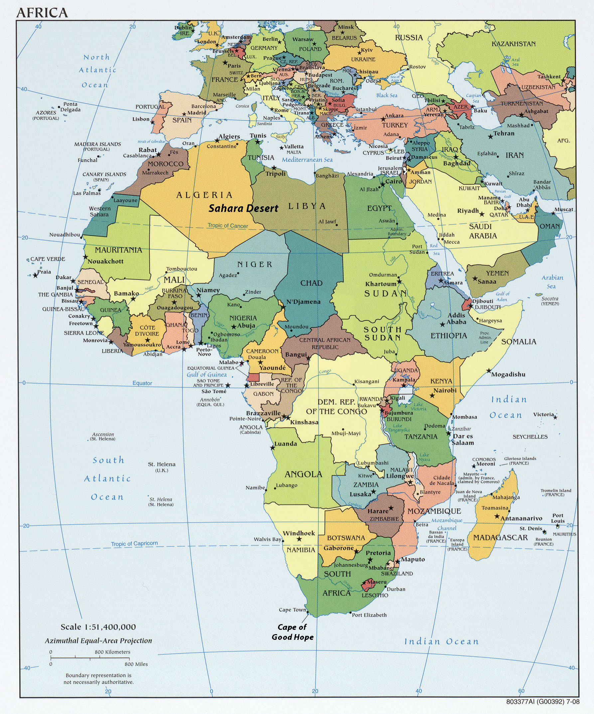Source: Updated from map courtesy of University of Texas Libraries, http://www.lib.utexas.edu/maps/africa/txu-oclc-238859671-africa_pol_2008.jpg.
There is considerable variation with respect to how the regions of Subsaharan Africa are delineated or identified on maps. The debate is not about what regions are in Subsaharan Africa but rather about which countries are to be included within each region. The regions have both similarities and differences. The cultural geography varies widely from country to country and from one ethnic group to another, but at the same time, there are shared cultural patterns across all Subsaharan African regions. For example, colonialism has been a major historical factor in the shaping of the countries. Families are large, and rapid rural-to-urban shift is occurring in all regions. Every region has large urban centers—often port cities that act as central core locations supported by a large peripheral rural hinterland.
Globalization has entered into the dynamics connecting these once-remote regions with the rest of the world. Advancements in communication and transportation technology have created networks connecting Africa with global markets. Subsaharan Africa has a young population that is on the move, seeking to gain from any opportunities or advantages it can find. The political arena is dynamic: changes in political leadership through coups or military takeovers are common, as is authoritarian rule. Subsaharan Africa is home to some of the poorest countries in the world. Poverty is evident in the countryside and in the urban slums of the largest cities. Bitter civil wars are a part of every region’s history. Violence and conflicts continue in some areas, while other areas exhibit political stability and thriving economies. The diversity in human geography is the most noteworthy dynamic in Subsaharan Africa. The variety of ethnic groups along with the multiplicity of languages and religious affiliations create strong centripetal and centrifugal forces that interact in a thriving sea of cultural diversity.
Most of the population lives an agrarian lifestyle, but there are people who are developing the skills necessary to adapt to the rapid globalization wave that is importing new technology and new ideas to the continent. The urban core areas of the continent are the main focus of the global trends in technology and communication. These urban core areas exhibit the typical dynamics of the core-periphery spatial relationship. Subsaharan Africa has many core areas and many peripheral areas. The core urban centers have political power thanks to the social elites who have connections to the global economy and often dominate political activities.
Figure 7.2 Regions of Africa
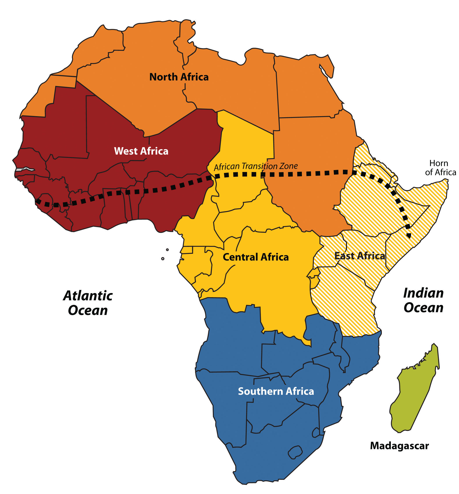To help identify places discussed in this book, Africa has been divided into regions along traditional boundaries.
Source: Updated from map courtesy of Andreas 06, http://commons.wikimedia.org/wiki/File:BlankMap-Africa.svg.
These core urban areas are often magnets for people from large families in rural peripheral areas seeking employment. Millions of people in Africa who seek employment are willing to migrate to the cities or even other countries to find work. The rural immigrants are often not of the same ethnic group as those in power, which sets up the basis for discriminatory policies that disadvantage the many minority groups that are not affiliated with the government. These dynamics can fuel protest activities with a goal of overthrowing the powerful elite. Various ideas have been proposed to help level the socioeconomic playing field. One of the more prominent options is the implementation of a democratic government, where most of the people have a stake in electing those that hold positions of leadership and power.
Broad patterns and dynamics of people and places are replicated throughout the Subsaharan realm. The regions share common demographic trends of large family sizes, agrarian lifestyles, and low income levels. The patterns of an economy based on agricultural production and mineral extractive activities as well as disruptive changes in political leadership are common throughout the continent. Each region has diverse ethnic groups and an array of different languages. South of the African Transition Zone, the most prevalent belief systems are Christian based and animist, while north of the zone, Islam is widespread. Division and civil unrest can occur where the different religions meet and compete for political control. These concepts will bear repeating throughout the chapter. The cultural mosaic of Subsaharan Africa is vast and complex, and this chapter will outline the basic trends and patterns with specific examples that will help place it all in perspective.
The African Transition Zone divides North Africa from the rest of Africa because of climatic and cultural dynamics. Cultural conflicts and desertification are common in the zone. Dry, arid type B climates, common in the Sahara Desert, are dominant north of the zone. Tropical type A climates prevail south of the zone. Global climate changes continue to shape the continent. The shifting sands of the Sahara are slowly moving southward toward the tropics. Desertification in the zone continues as natural conditions and human activity place pressure on the region through overgrazing and the lack of precipitation. Type B climates resurface again south of the tropics in the southern latitudes. The Kalahari and Namib Deserts are located in Southern Africa, mainly in the countries of Botswana and Namibia.
For a continent as large as Africa, Subsaharan Africa does not have extended mountain ranges comparable to the ranges in North or South America, Europe, Asia, or Antarctica. There are, however, on the Ethiopian Highlands the Ethiopian Plateau that reach as high as 15,000 feet in elevation. East Africa has a number of well-known volcanic peaks that are high in elevation. The tallest point in Africa—Mt. Kilimanjaro in Tanzania near the border with Kenya—is 19,340 feet high. Nearby in Kenya, Mt. Kenya is 17,058 feet high. The Rwenzori Mountains on The Congo/Uganda border reach more than 16,000 feet in elevation and create a rain shadow effect for the region. Permanent glaciers exist on these ranges even though they are near the equator. On the western side of the continent, Mt. Cameroon in Central Africa is more than 13,000 feet in elevation. The South Africa’s Cape Ranges are low-lying mountains no higher than about 6,000 feet. The continent of Africa consists of basins and plateaus without long mountain chains. The plateaus can range more than 1,000–2,500 feet in elevation. The only continuous feature is the eastern rift valleysLarge fault zones in the eastern region of the African continent caused by shifting tectonic plates; long valleys surrounded by higher elevations or plateaus are created. that run along the tectonic plate boundaries from the Red Sea through to South Africa.
The main rivers of Africa include the Nile, Niger, Congo, and Zambezi. The Nile River competes with the Amazon for the status as the longest river in the world; the White Nile branch begins in Lake Victoria in East Africa, and the Blue Nile branch starts in Lake Tana in Ethiopia. The Niger flows through West Africa; its mouth is in Nigeria. The Congo River crosses the equator with a large tropical drainage basin that creates a flow of water second only to the Amazon in volume. The Zambezi River in the south is famous for the extensive Victoria Falls on the Zambia and Zimbabwe border. Victoria Falls is considered the largest waterfall in the world. Other significant rivers exist such as the Orange River, which makes up part of the border between South Africa and Namibia.
There are a number of large lakes in Subsaharan Africa. The largest is Lake Victoria, which borders several East African countries and is considered to be the second-largest lake in the world in surface area. Only Lake Superior in North America has a greater surface area. A number of large lakes are located in the rift valleys of the east. Three of the largest lakes along the western rift are Lake Malawi, Lake Tanganyika, and Lake Albert. To the northeast of these in Kenya is Lake Turkana, which reaches to the Ethiopian border. Lake Chad is located in the African Transition Zone on the border between Chad, Mali, and Nigeria. Lake Chad has been severely reduced in size in recent years.
The equator runs through the center of Subsaharan Africa, providing tropical type A climates. These regions usually have more rainfall, resulting in lighter, leached-out soils that may not be as productive as regions with richer volcanic soils, such as those found in the rift valleys. Root crops are common in Africa, as are millet and corn (maize). The savanna regions of the east and south have seasonal rains that affect the growing season. Soils in savanna areas are usually not as productive and cannot be depended on to fulfill the agricultural needs of growing populations. Savannas are usually grasslands or scrub forests with a seasonal precipitation pattern. Cattle and livestock grazing are common in savannas, and migrations are frequent to follow seasonal grazing conditions. In specific areas of Southern Africa, larger farming operations exist in type C climates. However, Subsaharan Africa is not blessed with the large regions of rich alluvial soils found in the Northern Hemisphere. The ever-growing agrarian population has always depended on the land for food and sustenance, but these conditions are not favorable for Africa’s future. Populations are growing faster than any increase in agricultural production.
Increasing populations in Subsaharan Africa are taxing the natural environment. Where the carrying capacity has been exceeded, the natural capital is being depleted at an unsustainable rate. Deforestation is occurring in areas where firewood is in high demand, and trees are cut down faster than they can grow back. Expanding human populations are also encroaching on the natural biodiversity for which the African continent is renowned. Large game animals such as rhinoceroses, elephants, and lions have been hunted or poached with devastating consequences. The creation of game preserves and national parks has stemmed this tide, but poaching remains a serious problem even in these protected areas. Gorilla and chimpanzee populations have also been stressed by human population growth. These animals are being killed by humans for bush meat, and their habitats are being reduced by human activities.
Figure 7.4 Physical Features of Subsaharan Africa

Subsaharan Africa does not have long mountain chains such as those found in the other continents. The Nile, Congo, and Niger Rivers are the main waterways. The Namib and Kalahari are the main deserts south of the African Transition Zone. The Great Rift Valleys are the longest physical features in East Africa.
West Africa was home to a number of large empires that shaped the culture and people of present-day Africa. Gold, salt, copper, and ivory were important early trading commodities. Mining and acquiring these items brought enormous wealth to the region. Slavery became a component in the warfare between groups, as the winner usually took the captives to serve as servants or slaves. The Ghana Empire (790–1076 CE) was responsible for one of the early consolidations of power in West Africa. Though its power and wealth were vast, it was only the first of a number of empires to arise in the region.
After the Ghana Empire came the Mali Empire (1230–1600 CE), which was known for its wealth and size. The empire held major mining operations including gold, copper, and salt. Expanding along the Niger River and to the Atlantic coast, the Mali Empire extended over an area the size of Western Europe. Originally a federation of local groups, the empire incorporated many smaller provinces or kingdoms and had a major influence on the region’s laws and cultural heritage.
Figure 7.5 Empires of West Africa
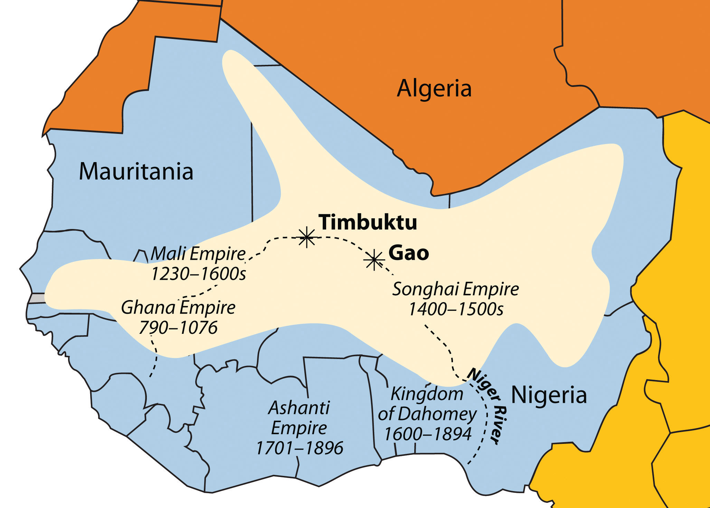The Niger River and the main empires of West Africa are indicated on this map. The shaded region indicates the furthest expanse of the Songhai Empire at its peak in the sixteenth century.
Source: Updated from map courtesy of Andreas 06, http://commons.wikimedia.org/wiki/File:BlankMap-Africa.svg.
One of the indigenous states that evolved out of the Mali Empire was that of the Songhai people, who were located to the east of the main Mali Empire. The Songhai had been based around the city of Gao for centuries, and in fifteenth century, they established the Songhai Empire, one of the largest empires in African history. The city of Timbuktu became prominent during this period as an urban center, and its educational institutions became well known. In the end, the Songhai Empire was defeated by Moroccan Berber forces that splintered the empire into many smaller kingdoms and ethnic clans.
South of the empires of the Niger River were coastal kingdoms, including the Ashanti and the Dahomey, which flourished during the colonial era. The local African groups had to contend with the colonial European traders and invaders, which had superior weapons and different technology. Besides the mining resources of gold copper, salt, and ivory, the slave trade was a driving force that attracted trade ships from various European countries.
The Ashanti Empire was located along the Atlantic coast in an inland region of what is now Ghana and Ivory Coast; this area served as a trading corridor where goods from the northern regions crossed to make their way to the coastal trading towns. The Ashanti Empire took advantage of the trade opportunities and became wealthy. By the time the Europeans arrived, Ashanti trade relationships were well established and capable of supplying the colonial ships with slaves, ivory, and gold. The coastal area of Ghana was known as the Gold Coast during colonial times. Similarly, the country of Ivory Coast (Côte d’Ivoire) got its name from its participation in the elephant ivory trade. The Ashanti were known for their involvement in the slave trade and today must live with that legacy.
This region of West Africa bordering the Atlantic was called the Slave Coast because of the high number of local people from this area who were sold into the European slave trade and shipped to the Americas. The once powerful Kingdom of Dahomey, east of the Ashanti Empire, was heavily involved in the slave trade. Slave trading with Europeans brought them rifles and other firearms that were useful in conflicts with their regional adversaries. A major slave state along the Slave Coast, the kingdom attracted the spite of its neighbors as a pariah state for selling its war captives into transatlantic slavery rather than killing them, as was the custom in warfare. The Kingdom of Dahomey became the country of Benin after the colonial era.
The slave trade brought wealth to many of the slave-trading kingdoms on the African coast. The demand for slaves pushed many of the African kingdoms to expand their slave-trading activities, capturing more individuals whom they could sell to European slave traders. Millions of Africans were captured by other Africans only to be sold into slavery, placed on ships, and sent to slave owners in the Americas. The total number sold into the Atlantic slave trade will never be known, but estimates range somewhere between ten and twelve million.
Figure 7.6 The Door of No Return
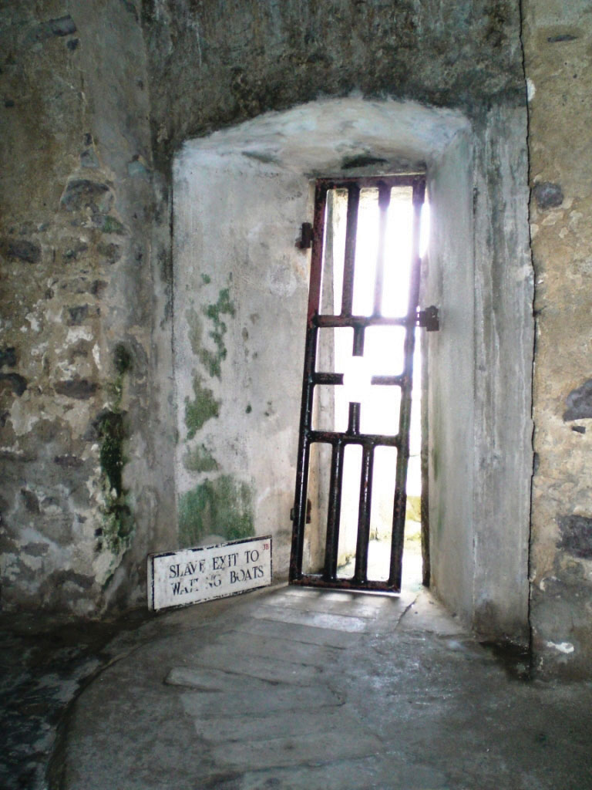Slaves kept for shipment were held in dungeons awaiting the arrival of the slave ships. This was the last doorway that slaves from Elmina, Ghana, saw on their way from the dungeon to the slave ship.
Source: Photo courtesy of Janet Gross.
States and kingdoms existed throughout Subsaharan Africa. Early kingdoms flourished in the region that is now Ethiopia. East Africa’s Axum Empire was an example of the powers of the early African savanna kingdoms located in the east. The struggles between Islam and Christianity divided the region and gave way to the African Transition Zone, which serves as the dividing line between the two religions. Ethiopia has retained its Christian heritage, while to the north and east Islam has prevailed. South of the equator, the ruins of Great Zimbabwe give testimony to the regional base of power that existed there in centuries past. The Zulu Empire thrived in the nineteenth century in the region that is now South Africa.
Wherever you go in the world, you cannot escape the impact of European colonialism. Subsaharan Africa was broadly affected by colonial activities, the legacy of which can be recognized to this day. Colonial powers of Europe ventured into Africa to claim colonies. In the discussion on Brazil in Chapter 6 "South America", Section 6.3 "Brazil", there is segment on slavery and the Trade Triangle of the North Atlantic. Slavery impacted Africa in other ways. Many African groups were instrumental in capturing and holding slaves to trade with the European merchants. These groups still exist and have had to live with the fallout of their role in the supply side of the slave trade.
By 1900, European colonial powers claimed most of Africa. Only the Kingdom of Ethiopia and the area of Liberia, which was established as a home for freed slaves, remained independent. In 1884, Otto von Bismarck of Germany hosted the Berlin ConferenceMeeting called in 1884 by Otto Von Bismarck of Germany with the purpose of dividing and organizing African colonies by European colonial powers. The people who attended were European and American; Africans were not invited., which to a great degree determined how Africa was colonized. This conference included fourteen colonial European countries and the United States, and its purpose was to divide Africa and agree on colonial boundary lines. Germany had few claims in Africa; Bismarck was hoping to benefit by playing the other countries against each other. At the time, more than 80 percent of Africa remained free of colonial control. On a large map of Africa, claims were argued over and boundary lines were drawn according to European agreements.
There was little regard for the concerns of local ethnic groups. Colonial boundaries divided close-knit communities into separate colonies. Ethnic boundaries were disregarded. Often-warring groups were placed together in the same colony. The Europeans, seeking profits from cheap labor and resources, did not consider the local people or culture and often employed brutal measures to subdue the local people. Most of the current borders in Africa are a result of the Berlin Conference, and many of the geopolitical issues that confront Africa today can be traced back to this event specifically and to colonialism in general.
European colonialism remained strong in Africa until the end of World War II, which left many European countries economically exhausted. In 1945, the United Nations (UN) was established. One of the primary UN objectives was to oversee the decolonization of European colonies. Still, colonialism in Subsaharan Africa lingered on. It was not until the 1990s that the last colony was finally freed. The transition from colony to independent nation itself caused conflict. Civil wars were fought over who would control the country after the Europeans were pushed out. The transition to full independence has exacted a heavy toll from African countries but has resulted in stronger political structures and greater democratic liberties in many cases. The first country to gain independence in Subsaharan Africa was Ghana in 1957.
Figure 7.7 Colonialism in Africa
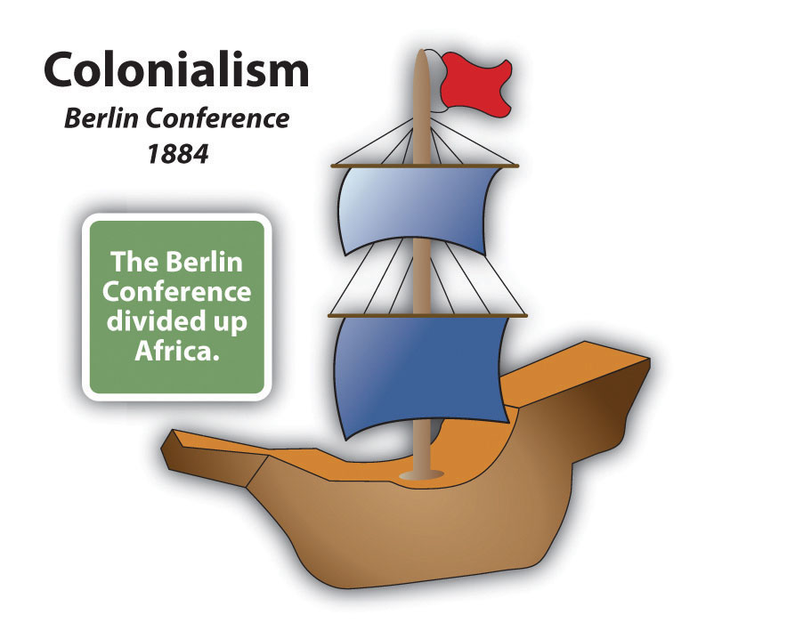During the era of independence after World War II, the Cold War between the United States and the Soviet Union enticed many of the African countries to support one or the other of the superpowers. The political pressure that divided African countries during the Cold War has persisted and is the basis of some of the current political problems. The European countries extracted raw materials and minerals from their African colonies, as well as slave labor. Varying degrees of attention were given to education, medical care, or infrastructure development. The dependency that a colony had had on a European country for economic income in some cases continued long after independence and may still continue today. On the other hand, major technology transfers from Europe to Africa infused greater efficiencies into Africa’s economic activities. The imperial nature of colonialism and the divisive Cold War did bring about, in an unfortunate manner, the benefits of structured governments and greater democratic processes for many of the local areas of the realm.
Figure 7.8 European Colonies in Africa, 1884
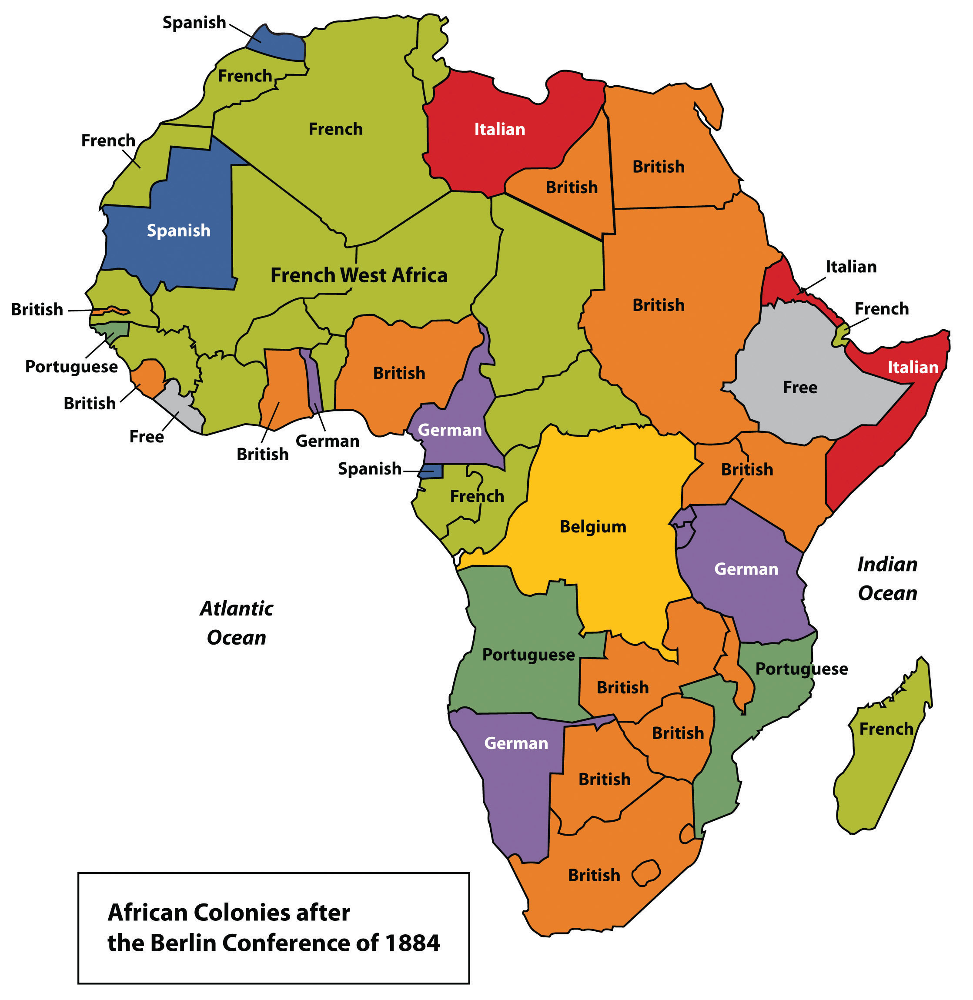Source: Updated from map courtesy of Andreas 06, http://commons.wikimedia.org/wiki/File:BlankMap-Africa.svg.
Figure 7.9 Freedom Square in Ghana
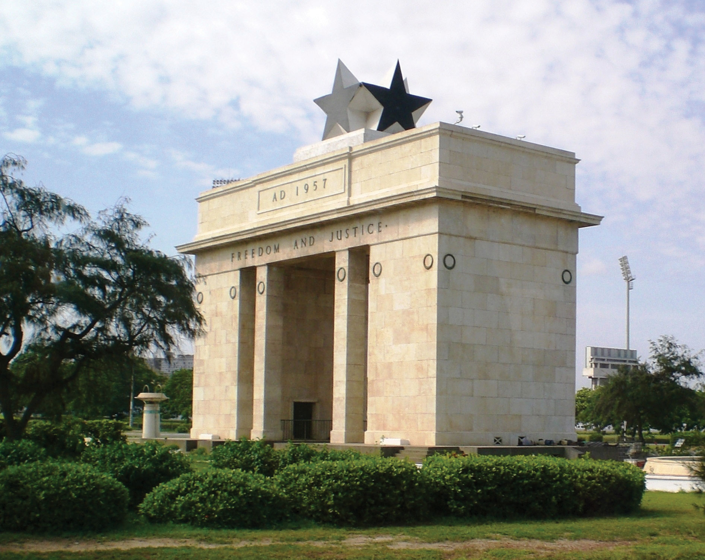This monument honors Ghana’s independence in 1957 from the British. Ghana was the first country in Subsaharan Africa to gain independence.
Source: Photo courtesy of Janet Gross.
The transition from European colony to independent state has not necessarily been a civil transition for African countries; likewise, independent African countries have struggled to create stable governments or peaceful conditions—though stable governments and peaceful conditions have been established in some cases. In nearly all cases, removing the colonial powers from Africa was only half the battle toward independence. The other half was establishing a functional, effective government.
Though each country has taken a slightly different path, most former colonies have endured civil unrest, conflict, or warfare in their push for stable governments. Coups, fraudulent elections, military regimes, and corruption have plagued the leadership in a number of African countries. Civil unrest usually precedes a change in leadership: political power regularly changes hands by a military coup or an overthrow of the current leader.
The realm has had difficulty developing and maintaining effective political systems with democratic leadership. Political leaders have come and gone, many have been replaced before their terms were over, and a few have stayed long after their terms ended. When a leader is elected democratically, it is common to have widespread accusations of corruption, voter fraud, or ballot box scandals. Such government mismanagement and corruption have been common problems.
The vacuum left by retreating colonial powers at times has been filled by authoritarian dictators or by leaders who assumed control of the government and then proceeded to pillage and plunder the state for personal gain or for the enrichment of their clan or political cronies. After the colonial era, it was not uncommon for new leaders to be connected to the old colonial power and to adopt the language and business arrangements of the European colonizer. This gave them an advantage over their competitors and provided a means of income gained by the support of their former European colonial business partners, which often wanted to keep ties with their colonies to continue to exploit their resources for economic profits. Many of these leaders stayed in power because of military backing or authoritarian rule funded by the profits from selling minerals or resources to their former colonial masters.
A few countries are still struggling to bring about some type of order and unity, and in spite of all the negative issues, there have been democratic and relatively stable progressive governments in Africa that have emerged from the transition in recent years, which is a hopeful trend for the long term.
It is important to note that the objective of colonialism was to connect a colony with the mother country, not to connect African countries to each other. As a result, little cooperation occurs between African countries. Each individual country interacts more with its European colonial counterpart with regard to trade, economics, and cultural dynamics. European colonialism has isolated African countries from their neighboring countries and does not contribute to unity within or among African regions. Colonial powers often built new port cities to extract goods and resources from their colonies and transportation systems from the new ports to the interior to collect the resources and bring them to the port. However, the colonial powers did not build a network of transportation systems that connected the region as a whole. Colonial powers were intent on continuing dependence on the mother country so their colonies could be controlled and dominated.
The current wave of globalization based on corporate colonialism continues to encourage the same pattern of discouraging interaction between counties and instead encouraging trade with more economically powerful non-African countries. Most of the interaction between countries is a result of crisis or warfare, in which case large numbers of refugees cross the border into neighboring countries for personal survival or security. To begin to work together and promote trade, common transportation, security, and industry, fifteen West African states came together in 1975 to create the Economic Community of West African States (ECOWAS)Agreements in 1975 between fifteen West African states to begin to work together and promote trade, common transportation, security, and industry.. Since then, additional political and economic agreements have been signed by various African countries. In 2001, the more expansive African UnionAgreements in 2001 between African states to form a united body to focus on issues within the African continent. was created to help African states compete in the international marketplace.
Identify the following key places on a map:
The demographic data for each country in each region of Subsaharan Africa indicate the region’s human geography. Urban percentages, family size, income levels, and the other data that can indicate the lifestyle or development level are acutely helpful in understanding the trends in Subsaharan Africa. The index of economic development illustrates the dynamics and conditions that exist in the realm. The data indicate the consistency of economic and development trends across Africa. The data does not, however, indicate differences in cultural dynamics and uniqueness in the ways that local people live. The interesting part of studying Subsaharan Africa is the many ethnic and cultural groups in each country that bring to the surface a wide array of global diversity in our human community. Within each and every country are microcosms of human societies that hold particular customs that may be thousands of years old. Globalization and technological advancements challenge every cultural group to adapt and innovate to make a living yet provide continuity in their heritage. The remote cultural groups of Subsaharan Africa are most susceptible to the volatile nature of globalization, which threatens their current way of life.
Subsaharan Africa is a peripheral world region with neocolonial economic patterns. Peripheral regions usually supply raw materials, food, and cheap labor to the core industrial countries. Most of the population in Subsaharan Africa works in subsistence agriculture to make a living and feed their families. Families are large. In recent decades, there has been enormous rural-to-urban migration to the major cities, which are extremely overcrowded. Subsaharan Africa has more than 750 million people, and most earn the US equivalent of only $1–3 per day.
There is no single major core economic area in Subsaharan Africa. This realm has many core cities and the rest is periphery. Many of the core cities are improving their technology and infrastructure and entering into the globalized economy. Even so, as much as 70 percent of the people still work in agriculture, leaving little time to develop a large educated group of professionals to assist with social services and administrative responsibilities. The realm depends heavily on outside support for technical and financial assistance. Computers, medical equipment, and other high-tech goods are all imported. African states have formed trade agreements and have joined the African Union to assist each other in economic development and trade.
Figure 7.10 Informal and Formal Sectors

The photo on the left is of side-street vendors in Senegal, who might contribute to the informal market system that is prevalent in many Subsaharan African countries. Cash and bartering are the main methods of payment. The photo on the right is of a shopping mall in Zimbabwe, which is part of the formal market system that is regulated and taxed by the government.
Sources: Photo on the left courtesy of Radoslaw Botev, http://commons.wikimedia.org/wiki/File:Market_Kaolack.jpg. Photo on the right courtesy of Gary Bembridge, http://www.flickr.com/photos/tipsfortravellers/557269907.
Subsaharan Africa has nearly forty urban areas of more than one million people. At the center of the central business districts (CBDs) are modern high-rise business offices well connected to the global economy. Outside the CBD are slums with no services and miserable, unsanitary conditions. The informal sectorEconomic activity that is not regulated, controlled, or taxed by the government. of the economy—that which is not regulated, controlled, or taxed—has become the primary system of doing business in most of the cities. The informal sector comprises trading, street markets, and any other business without financial records for cash transactions.
The lack of government regulation and control prevents taxes from being assessed or collected, which in turn diminishes support for public services or infrastructure. The formal sectorEconomic activity that is regulated, controlled, or taxed by the government. of the economy—that which the government can regulate, control, and tax—is forced to foot the bill to operate the government and support public services such as education, security, and transportation. In spite of the misery and unhealthy conditions of the slums where millions of people already live, more migrants from the countryside continue to shift to the city in search of jobs and opportunities. African cities are growing rapidly, many without organized planning.
If the index of economic development were applied to Subsaharan Africa, a clear pattern would emerge. Rural areas would be in the lower stages of development, and only a few developing areas would be higher than stage 3. A large percentage of this realm would be in stage 1 or 2 of this model. Countries with higher standards of living, such as South Africa or Botswana, would be working through stage 3 or 4. This region has one of the fastest-growing populations of the world and economically lags behind countries in the Northern Hemisphere, which have transitioned into the higher stages of the index of economic development.
The socioeconomic data illustrate well the conditions for people in Africa in comparison to the rest of the world. African countries are at the lowest end of the statistics for development prospects. The larger cities are showing promise for advancement into the higher stages of development. Family sizes in the rural countries are some of the largest in the world. The average fertility rate for much of Africa is about 5; in Mali and Niger, the rate is higher than 7. One-third to half of the populations of these countries are under the age of fifteen. Children make up most of the population in many areas—an indication that heavier burdens are placed on women, meaning that women are not easily able to get an education or work outside the home.
The populations of West African countries are increasing rapidly and will double in about thirty years at the current rate. This trend places an extra burden on the economy and on the environment. It is fueling one of the fastest rural-to-urban shifts in the world. West Africa is now only about 32 percent urban, and Burkina Faso and Niger are less than 20 percent urban—clear indications that agriculture is the largest sector of their economies and that most of the people live in rural areas or small villages. Personal income levels in West African countries are among the lowest in the world; as far as standard of living is concerned, these are poor countries. Few economic opportunities exist for the millions of young people entering the employment market.
The United Nations (UN) human development index lists all but two of West African countries in the lowest category of development. Sierra Leone is the lowest of the world. Ghana and Senegal were the two countries listed in the medium range. Senegal is the lowest country in the medium category, just barely rising about the lowest tier. A country listed in the lowest tier of the medium category translates into a region with low availability of opportunities and advantages for its people. As a peripheral world region, the economic base is structured around agriculture with supportive extractive activities. Agricultural activities are renewable, but agricultural profit margins are slim. These countries are in a subsistence mode with a rapidly expanding population and few industrial or postindustrial activities to gain income.
No Subsaharan African nation is in stage 5 of the index of economic development. Nevertheless, the fact that they are not consumer societies does not negate the rich cultural values and heritage of the realm. The energy of the people does not revolve around consumerism but is instead focused on the people themselves. High levels of social interaction and community involvement bring about different cultural standards than those of a consumer society, which focuses more on the individual and less on community. Unless there is social unrest or open warfare, which does exist in various places, the people work hard to bring about a civil society based on family and tradition.
Figure 7.12 Population Pyramids of African Countries

The population pyramids of Niger, Tanzania, and South Africa illustrate the population growth dynamics of Subsaharan Africa. Niger’s population pyramid illustrates large family size and rapid population growth. Tanzania’s pyramid is similar but shows signs of slowing population growth. South Africa, which is more urbanized and industrialized, shows signs of declining family sizes and fewer children.
Source: Data courtesy of US Census Bureau International Programs.
Subsaharan Africa covers a large land area more than 2.3 times the size of the United States. Thousands of ethnic groups are scattered throughout the realm. There is immense diversity within the 750 million people in Subsaharan Africa, and within each country are cultural and ethnic groups with their own history, language, and religion. More than two thousand separate and distinct languages are spoken in all of Africa. Forty are spoken by more than a million people. Many local languages are not written down and have no historical record or dictionary. Local languages without a written history are usually the first to be lost as globalization affects the realm. Nigeria, with more than 130 million people, is the most populous country in Africa. It is about the size of Texas and Oklahoma combined, and the African Transition Zone cuts through the country’s northern portion. More than five hundred separate languages are spoken in Nigeria alone. Three of the six dominant languages in Subsaharan Africa—spoken by at least ten million people or more—are spoken in Nigeria: Hausa, Yoruba, and Ibo. The three remaining major languages of Subsaharan Africa are Swahili, Lingala, and Zulu.
Colonial activity changed much of how the African countries operated economically, socially, and politically. Language is one aspect of culture that indicates a colonial relationship. Many African countries today speak a European language as the official language. Mauritania is the only country that has Arabic as its official language. Nigeria has English plus other local languages. The official languages of most of West Africa are either French or English, and Guinea-Bissau’s official language is Portuguese.
This vestige of colonial power would seem inconsistent with the desire to be free of foreign domination. However, because often dozens to hundreds of local languages are spoken within the country, choosing the colonial language as the official language produces less of an advantage for one group wishing to dominate the political arena with its own local language and heritage.
For example, a language problem arises when a government needs to print material for the country. What language do they use? In Nigeria, there would be more than five hundred possible languages. What if the leadership used a language only spoken by a few people? The language of those in power would provide an advantage over those that could not understand it. What if there were more than five hundred separate languages in Texas and Oklahoma? How would they function? This is why many African countries have chosen a colonial language as their country’s lingua franca, or national language. Ghana, which is the size of Minnesota, has more than eighty spoken languages. Ghana and Nigeria have both chosen English as their national language to provide a cohesive and inclusive method of addressing the language dilemma.
A portion of the two thousand languages spoken on the African continent will not survive. A large number of the languages are spoken by a small number of local groups that may or may not have a written text or alphabet. The influence of globalization causes the country’s lingua franca to overshadow local languages, which are relegated to the older generations that may not be fluent in the languages of global business and commerce. Young people often learn the lingua franca and may or may not pass their local language on to the next generation. This is how languages become extinct. Similar dynamics can be applied to local religious beliefs. Outside influence can often erode local beliefs and cause an evolution of religious tenets that eventually transform indigenous beliefs into patterns similar to the larger, more mainstream religions.
Figure 7.13 Language Families of Africa
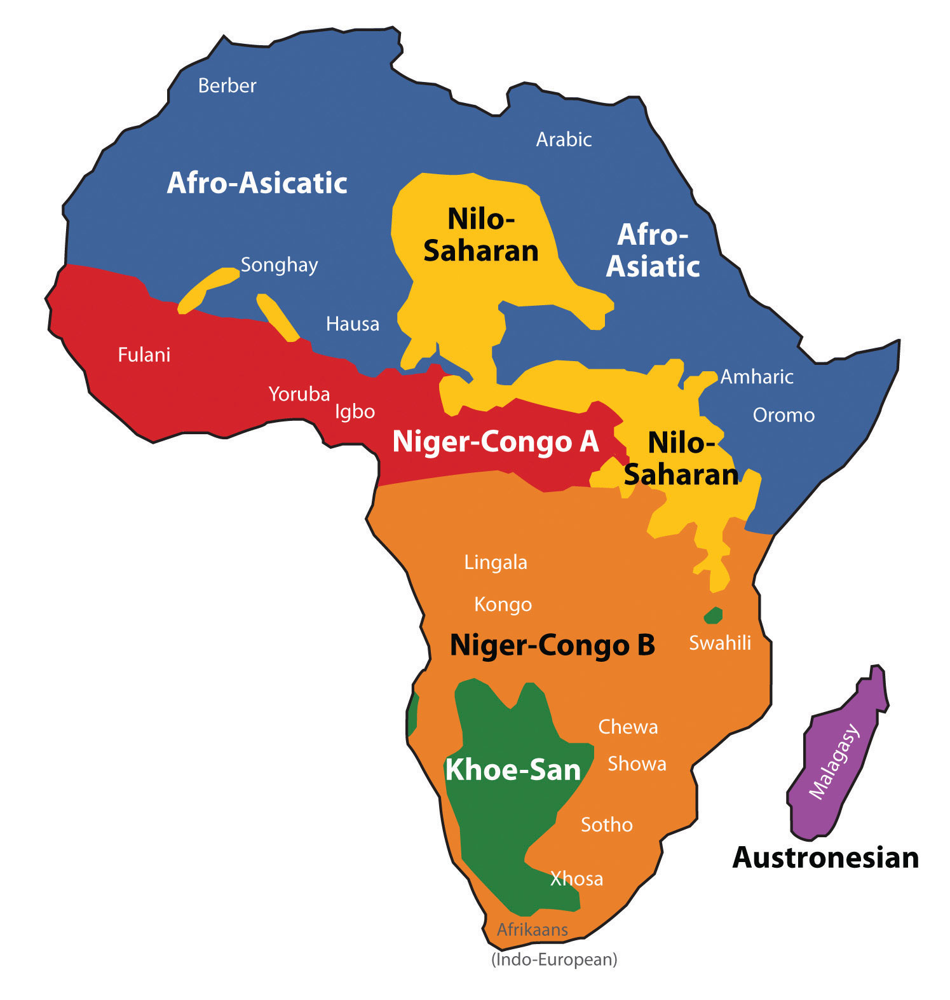There are six main language families with many variations of each. It is estimated that more than two thousand languages are spoken in all Africa.
Source: Map courtesy of Mark Dingemanse and Pmx, http://commons.wikimedia.org/wiki/File:African_language_families_en.svg.
Before the monotheistic religions from the Middle East were even in existence, the people of Africa followed traditional animist beliefs. The diffusion of Christianity and Islam to the African continent convinced many African people to abandon their animist beliefs. African religions spread with the slave trade and became a part of the African DiasporaThe disbursement of people with an African heritage to other parts of the world mainly through the slave trade.. Examples can be found in the Santeria religion in Cuba, Umbanda followers in Brazil, and Vodou (Voodoo) practitioners in Haiti. Many of these examples indicate a high rate of mixing between traditional religions and Christianity, something that is not as well accepted within Islam.
The current religious trends in Africa follow the pattern of the African Transition Zone. Most of the population north of the zone follows Islam, and most of the population living south of the zone follows Christianity. Large percentages of people in the region follow a wide array of traditional or animist beliefs. For example, as of 2010, more than 50 percent of the people of Togo still followed local religions not affiliated with Christianity or Islam. Only about 29 percent of the population claimed to be Christian, and even fewer claimed to follow Islam.“The World Factbook,” Central Intelligence Agency, https://www.cia.gov/library/publications/the-world-factbook/geos/to.html.
Along the African Transition Zone, followers of one religion will clash with followers of the other. Countries such as Nigeria have a history of this type of social division, and Nigeria’s government allows Islamic Sharia law to take precedence over civil law in the country’s northern regions. For example, in 2002, the Miss World beauty pageant was to be held in Nigeria’s capital. At the same time, Nigerian news reported a case of a young woman charged with adultery in Muslim-dominated northern Nigeria. The woman was to be stoned to death for her crime. Northern Nigeria is north of the transition zone and is staunchly Islamic. Southern Nigeria is mainly Christian or animist. The northern Muslims were protesting the “decadent” Miss World beauty pageant, and riots spilled over into the streets. Buildings were burned, cars were overturned, and more than one hundred people were killed. Meanwhile, people in the south were protesting the death sentence of the woman charged with adultery. Contestants for the Miss World contest began to pull out of the competition, some in protest and some for personal safety reasons. In the end, the woman sentenced to death was smuggled out of northern Nigeria to the safety of the south. The Miss World contest was moved to London.
Both Islam and Christianity have been on the rise in Africa. As the local beliefs are replaced with monotheistic religions, there is more integration with either the West (Europe and America) or the Middle East. Religious activity through Christian missionaries or the advancement of Islam sometimes coincides with economic support being brought in through the same channels, which is often welcome and enhances the global relationships that occur.
However, Africa is still full of traditional religions with rich spiritual histories. Spiritual forces are found in the environment. Deities of all kinds are worshipped throughout Africa. Christianity and Islam are latecomers to the region but have made deep inroads into the African culture. Both compete for the souls of the African people.
Figure 7.14 Dominant Religions in Africa

Islam is prominent north of the African Transition Zone, and Christianity is more prominent south of the African Transition Zone.
Source: Updated from map courtesy of Andreas 06, http://commons.wikimedia.org/wiki/File:Blank_Map-Africa.svg.
Subsaharan Africa is home to thousands of ethnic or traditional groups. Each has a separate identity and history, and often one group is in conflict with another. The slave trade and the establishment of colonial political boundaries or policies exacerbated historical ethnic hostilities. Major civil wars have been fought throughout the history of throughout Subsaharan Africa and continue at the present time. Central Africa has endured ongoing brutal conflict in the past decade, with no solution in sight. More than five million people have died as a result of the civil war in The Congo (Zaire). Fighting continues between various factions over political control or control over natural resources, such as diamonds or gold. Civil wars are devastating some African countries. Many other countries, such as Zimbabwe, Chad, and the Central African Republic, have also suffered economic disintegration as a result of severe political unrest.
Rwanda’s Tutsi-Hutu conflict has been historic in its violence and in the senseless killing of innocent people. In 1994, the centuries-old conflict erupted into violence of unprecedented proportions. Hutu militias took revenge on the Tutsis for years of suppression and massacred anyone who did not support the Hutu cause. Tutsi rebels finally gained strength, fought back, and defeated the Hutu militias. More than a million people were killed, and more than a million defeated Hutus fled as refugees to neighboring countries, where many died of cholera and dysentery in refugee camps.
Figure 7.15 Tragedy in Rwanda

The bones of victims killed in the Rwandan genocide are kept in this school in Rwanda. The total number of people killed in the war is unknown.
Source: Photo courtesy of United States Congress, http://commons.wikimedia.org/wiki/File:Rwandan_Genocide_Murambi_skulls.jpg.
The civil war in Rwanda and the many refugees it created destabilized the entire Central African region. The shift in population and the increase in military arms along the Zairian border resulted in an extensive civil war in The Congo (Zaire) that has resulted in the deaths of more than five million people, many by disease or starvation. Over three million deaths are estimated to have been related directly to the war and another two million by the harsh conditions in the region.“Crisis Caused 5.4 Million Deaths in Congo, Report Says,” AmericanRenaissance.com, http://www.amren.com/mtnews/archives/2008/01/crisis_caused_5.php; “DR Congo War Deaths ‘Exaggerated,’” BBC, http://news.bbc.co.uk/2/hi/africa/8471147.stm. The civil wars in The Congo from 1996 to 2003 changed the cultural and political landscapes and destroyed valuable infrastructure. One of the driving forces in these wars is the control of valuable mineral resources found in the Great Rift Valley along the eastern boundary of The Congo. Diamonds, gold, copper, zinc, and other minerals are abundant in this region, and wealth that can be gained from the mining of these products attracts political forces to compete for their control.
Civil wars have wreaked havoc on the countries of Angola, Sierra Leone, Liberia, and Somalia. All have experienced some amount of serious conflicts in the past decade. Many of the civil wars are not reported by the news media worldwide, even though the number of people affected, injured, and killed is deplorable. In places such as Ivory Coast, Nigeria, and Zimbabwe, the streets have become a battleground.
Creating stability in parts of Africa has been challenging, as civil unrest and political corruption continue in many African countries. The core industrialized countries have been hesitant to step in or invest in the peace and stability of Africa. Governments of more than a few African countries have been unable to bring stability or to provide for their people. For example, Somalia has no central government; rather, it is ruled by warlords and village chiefs. Corruption, dictatorial rule, and military force have been major components of government rule in these cases.
As if Subsaharan Africa did not have enough to work through to achieve stability, it must also cope with high numbers of people infected with HIV and AIDS. From South Africa to Kenya, there is a line of countries with some of the highest percentages of HIV-infected people in the world. The HIV virus has infected more than 24 percent of adults in Botswana, and some villages have lost an entire generation of adults to AIDS. The AIDS pandemic has become a major health crisis for Subsaharan Africa. According to the World Health Organization, as many as thirty million people in this realm are HIV-infected.
It’s possible to live with HIV for years before dying of AIDS. HIV-infected individuals can pass the virus to others without knowing they have it, and millions of people die of AIDS in Subsaharan Africa without ever knowing they were infected. The lack of education, HIV testing, and medical services hinder progress toward stopping this deadly disease. Prevention is an ideal that has not materialized yet. Many people do not want to be tested out of fear of rejection by their families and friends if they are infected. AIDS will surely kill millions more in Africa before a solution is found.
Many other diseases are common in Subsaharan Africa. Some are spread by vectors in the environment. Mosquitoes spread illnesses such as malaria and yellow fever, which are common throughout the realm. Sleeping sickness is spread by the tsetse fly, which can also infect cattle and livestock. Hepatitis is widespread. Schistosomiasis, tuberculosis, and typhoid are also common. Unsanitary conditions and polluted water are breeding grounds for microbes that cause diseases. People living in less-than-sanitary conditions are more likely to come in contact with and become infected with these diseases and are also less likely to obtain medical attention at an early stage of the disease.
Figure 7.16 HIV and AIDS

This map shows the estimated percentage of adults with HIV in Subsaharan Africa for each state based on best estimates by the World Health Organization and the UN.
Updated from map courtesy of Andreas 06, http://commons.wikimedia.org/wiki/File:Blank_Map-Africa.svg. Data courtesy of UNAIDS 2010 Global Report, http://www.unaids.org/documents/20101123_GlobalReport_Annexes1_em.pdf.
Subsaharan Africa has great potential for the development of tourism. Tourism is considered a postindustrial activity with mixed income opportunities. If Africa can manage its resources and provide a safe environment for travelers, tourism will have a strong impact on Africa’s economic growth and will play a significant role in its future.
Tourism is a growing sector of the global economy. Travel and tourism jobs are increasing worldwide. Africa as a whole attracts less than 5 percent of total world tourists and accounts for only a small percentage of international tourism income. Given the region’s slim share of the tourism market and the expected dynamic growth of the sector worldwide, Africa can expect to substantially increase its share of global tourism activity.
Subsaharan Africa has a strong supply-side potential to attract tourists. Beach resorts alone create a large draw for tourists. The coastal waters of the Indian Ocean boast some of the finest beaches in the world, with plenty of opportunities for sailing, diving, or other water sports. South Africa is proud of its secluded beaches and beautiful coastline. Other well-known coastal tourist destinations include Zanzibar-Tanzania, Benguerra Island in Mozambique, and the Seychelles. Other areas with tourism potential are the wildlife parks and game preserves. Cultural locations with a rich heritage of historical significance are growing in their attractiveness to and accessibility for world travelers.
Africa excels in attracting tourists to its wildlife and game reserves. Safari tourism highlights exotic creatures, including elephants, lions, rhinos, hippos, and big game. Africa is full of extensive game reserves and national parks. The following are some of the most visited animal safari destinations (* indicates a UNESCO World Heritage Site):
Subsaharan Africa is replete with natural features or attractions that tourists gravitate toward, particularly tourists who are in search of outstanding scenic sites or desire an environmental adventure. There are dozens of awe-inspiring national parks throughout Africa. The following are some of the more interesting physical geography locations in Subsaharan Africa (* indicates a UNESCO World Heritage Site):
Cultural and heritage tourism has grown immensely in recent years. Cultural assets and heritage landscapes have always provided for excellent tourist attractions. Subsaharan Africa has a great wealth of culture and heritage to attract tourists. The following are a few of the most well-known cultural destinations in the realm (* indicates a UNESCO World Heritage Site):
Figure 7.17 African Elephants

Wildlife and big game are natural resources for tourism. Countries in Subsaharan Africa have created many protected areas for wildlife.
Source: Photo courtesy of Bryce Sitter.
Every African country, urban center, or rural village is its own unique tourism magnet. The tourism business, however, is broader than just the sites themselves. Considerations need to be made for transportation to and from the country and final destination. Hotels and guest accommodations, such as food services, restaurants, and the availability of other types of consumer goods, need to be considered. Services need to be available that link the various components of a trip, such as guide services in national parks or city bus tours. The attractiveness and competitiveness of each tourism destination will depend on the site’s quality and accessibility.
A serious financial investment is needed to bring Subsaharan Africa up to par with the global marketplace. Africa has huge potential for growth in its tourism market. Unfortunately, the same problems with tourism that were discussed in the lesson on tourism in the Caribbean (Chapter 5 "Middle America", Section 5.4 "The Caribbean") can be applied to Africa. There are many positive and negative aspects to tourism, and a trade-off is usually needed. Heavy tourism traffic might have a negative impact on the environment, cultural stereotypes tend to be exploited, and the disparity between wealthy tourists and service workers earning a modest wage may lend itself to divisions and social friction.
Tourism demands higher levels of security and public health at all levels. Money spent on tourism development is money not spent on schools or clinics. On the other hand, without the tourism income, there are no jobs. Tourism brings to the surface both centrifugal and centripetal cultural forces. To be successful, Africa will need to balance out the economic need for tourism with its willingness to comply with the requirements of the tourism industry.
The region of West Africa includes the southern portion of the bulge of the continent, which extends westward to the Atlantic Ocean. This region is bisected by the African Transition Zone, which borders the southern edge of the Sahara Desert. The main physical features include the Sahara Desert and the Niger River. The Cameroon Highlands are located on the eastern border between Nigeria and Cameroon. At 4,100 miles long, the Nile River is the longest, while the Congo River is Africa’s second longest at 2,922 miles in length. The Niger River is Africa’s third-longest river and extends more than 2,600 miles from the Guinea Highlands through Mali, Niger, and Nigeria before reaching the Atlantic Ocean in the Gulf of Guinea.
Some geographers include the country of Chad or portions of it within the region of West Africa. In this textbook, Chad is listed with Central Africa. The portions of Chad located north of the African Transition Zone share similar characteristics with North Africa. Off the coast of Mauritania are the Cape Verde Islands, which are united as an independent country associated with Africa. Cape Verde was once a Portuguese colony but received its independence in 1975. Western Sahara has been in conflict with Morocco over independence and is most often associated with the region of North Africa because of the influence of Islam and because of its connection to Morocco.
The African Transition Zone cuts across the region of West Africa, indicating a division between Islam and Christianity and between the Sahara Desert and the tropics. This diversity in religion and climate is usually exhibited with a north/south division. Islam is the dominant religion on the north side of the African Transition Zone; Christianity is more dominant to the south. The two religions often clash in the areas where they meet. Traditional beliefs and animist religions are also practiced in the African Transition Zone.
Figure 7.18 West Africa
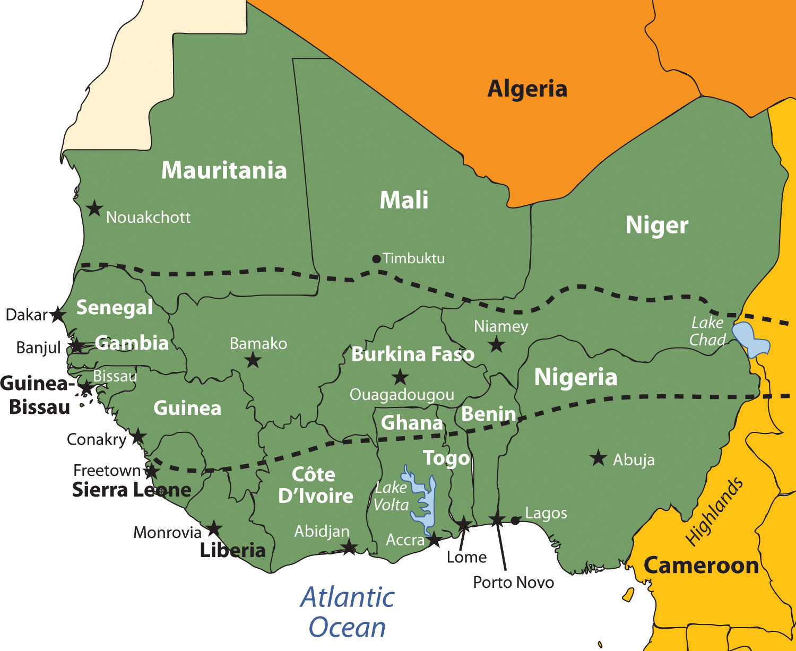This map shows the region of West Africa as defined in this chapter. The African Transition Zone crosses the middle of this region.
Source: Updated from map courtesy of University of Texas Libraries, http://www.lib.utexas.edu/maps/africa/txu-oclc-238859671-africa_pol_2008.jpg.
The terms “state” and “country” are often used interchangeably by the world community outside of the United States. Both are meant to refer to a physical unit with a sovereign and independent government. In Sub-Saharan Africa the term “state” is commonly used to refer to a country in any one of the various regions.
The former French colony of Niger is landlocked, with the Sahara Desert making up its largest portion. Niger is a land of subsistence farmers, and most of the population lives in the southern regions. The country is less than 20 percent urban. Other economic activities include uranium mining, which is the country’s main export. The world demand for uranium has not been strong in recent years. Oil exploration has begun and international oil corporations have garnered contracts for drilling.
The Sahara Desert is moving southward, and the agrarian culture at the base of Niger’s society is often plagued by drought and famine. The Niger River flows through the southwestern region and provides fresh water, but the northern region is mainly the Sahara Desert, and large portions are covered with sand dunes.
The country has extreme demographics. Niger has the highest fertility rate (7.6) in the world, and half the population is under the age of fifteen, causing a population explosion that taxes the sparse natural resources and brings even more poverty to a country at the bottom end of the index of economic development. Infant mortality rates in Niger have been the highest in the world.
The mainly Sunni Muslim country has a rich cultural base but suffers from economic problems that appear to increase with the increase in population and desertification. Heavy national debt has hindered social services and has required a considerable amount of foreign aid from a number of sources. As a former colony, Niger, France has been a main contributor to providing economic aid along with the United Nations (UN).
The political conditions in Niger are typical of the region. For the first thirty years after independence from France, the country was ruled by a single political party and military rule. There have been several coups and various political leaders have been in power. A dispute remains with Libya over its northern border. Ethnic infighting with a minority TauregNomadic ethnic group of the Sahara known for their indigo-colored clothing and use of camels for transportation. group has emerged in recent years, bringing conflict and discord. The Taureg, found throughout northwest Africa in the interior Saharan region, have many ethnic clans and have been masters of camel caravans, often with a nomadic heritage. Their clothing is often made of cloth colored with an indigo dye that distinguishes them from other ethnic groups. The Taureg fought historic battles for an independent homeland against the French during the colonial era.
To the west of Niger is Mali, another landlocked Muslim country dominated by the Sahara Desert. Mali was home to various ancient empires. Wealth was historically gained from the mining of gold, salt, and copper. The Niger River flows through the entire southern region, providing a means of transportation and fishing as well as fresh water. The ancient city of Timbuktu, once a port on the Niger River, was a center of commerce and trade for the region and was used by the Taureg as early as the tenth century. Timbuktu has played an important role as an educational focal point for many of the peoples of the region. The University of Timbuktu is noted for its educational activities and comprises various colleges and madrasas (Islamic schools of learning). At one point in its history, it claimed to hold the largest collection of books in Africa. The capital city of Mali is not Timbuktu but Bamako, which is located in the southwest. Timbuktu remains a main tourist destination for the country and the region.
Timbuktu (Tombouctou) is a key city for the country of Mali in the middle of the Sahel. The city has been stereotyped by people in Western culture as the farthest place from civilization on Earth. In reality, it is a thriving city that is well connected to the globalization activities of the rest of the planet. It was once one of the wealthiest cities in the world. Gold was plentiful, and the city was home to one of the largest universities in the ancient world. Today the city exhibits traits similar to North Africa but is in the African Transition Zone. Modern technology has found its way into the lives of the people of Timbuktu. International exchanges are providing interesting insights into the globalization process. Even in the rural areas, the people have found innovative ways to share in the international dynamics of global cultures.
Dr. Ibrahim N’diaye, originally from Mali and as of 2011 a history instructor at Morehead State University in Morehead, Kentucky, tells a story about his experience while visiting the rural Mali village of Koriyome as a member of the planning committee for the “Tombouctou 2000” millennium commemoration festival the Mali Ministry of Culture was sponsoring at the time. He noticed that in the evening at a certain time, the people of the village started up gas-powered electric generators and then gathered around television sets connected to a satellite feed throughout the village. The evening feature was a Brazilian soap opera called Mari Mar. It was broadcast in Portuguese, a language no one spoke in the village. The seminomadic villagers were totally immersed in the soap opera and had even altered the names of the key characters to match local names. For example, they referred to the main character Mari Mar as “Mariyama” (which is the same as Mari/Mary); Mari Mar’s husband, Sergio, as “Saajo”; the cruel stepmother Angelika as “Jelika”; and so on. Everyone in the village seemed to understand the plot and reveled in the drama of the characters and their exploits. The production became a centripetal force that brought the villagers together in a way that would not have been expected by anyone in Brazil or the United States. Who would have believed that soap operas would have become a method of diffusing global culture to the planet? This story also indicates that human nature is similar in societies throughout the world.
Figure 7.19 Bamako, Mali
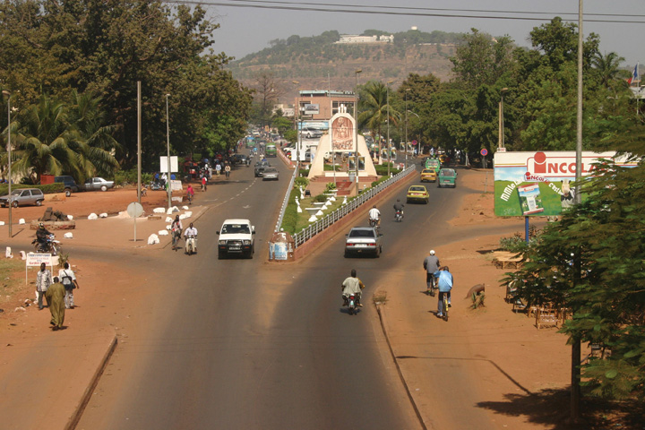This scene shows the various modes of transportation that are common on the road outside Bamako, Mali.
Source: Photo courtesy of Robin Taylor, http://www.flickr.com/photos/42993412@N00/72447497.
Mali shares similar political dynamics and demographics with Niger and the rest of the region; however, Mali now has a stable democratic government with little political conflict. There are issues with the Taureg in the north and refugees from Ivory Coast in the south, but the country is quite stable politically in spite of the low standard of living and high population growth.
Mauritania is also dominated by Islam and the Sahara Desert. Niger, Mali, and Mauritania are the largest of the West African states and together would cover the area of the United States east of the Mississippi River. The term “state” refers to countries with independent governments. Mauritania’s access to the Atlantic coast provided a shipping connection to the rest of the world. For years the country fought over control of portions of Western Sahara but relinquished those areas in 1975.
Unfortunately, the political and economic problems that are common in the region are evident in Mauritania. In 1960, the country gained its independence from the French, and a number of political coups and changes in government occurred as a result. Interethnic conflicts exist between the African groups of the south and the Arab-Berber groups of the north.
Political unrest and economic hardships continue to add to the challenge of a growing population. Poverty, health care, and education have been major issues that require government support. Foreign aid has been critical to the operation of the country.
Large amounts of iron ore make up about 40 percent of the country’s exports. Fishing off the coast has great potential but has been exploited by international fishing vessels; thus Mauritania is in danger of losing revenues and a declining resource base if protection is not secured. Even though the country is largely desert, most of the population works in subsistence agriculture.
Figure 7.20 Senegal and the Gambia
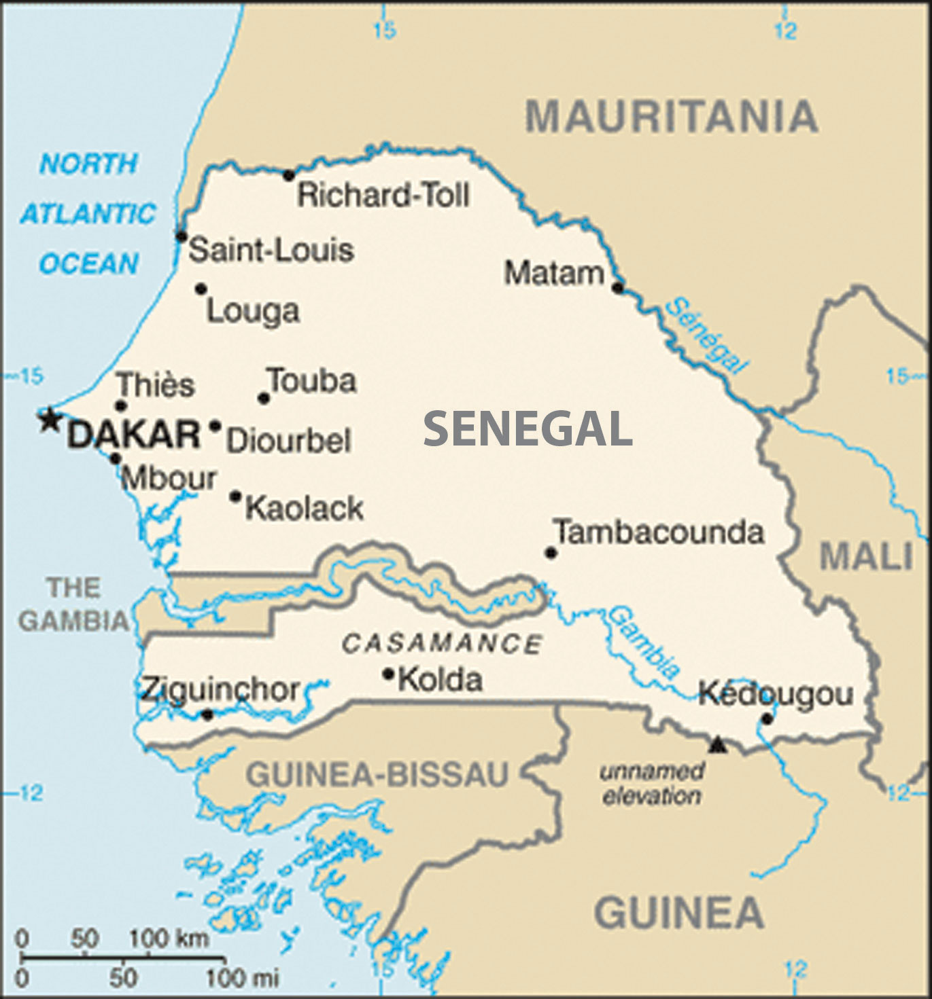The Gambia is totally surrounded by the country of Senegal. The Gambia was once a British colony and Senegal was once a French colony.
Source: Map courtesy of CIA World Factbook.
Within certain communities in Mauritania, especially within the Arab Moor group, the concept of female beauty and prosperity was often associated with ample body size. Young girls were encouraged to eat high-fat foods in high quantities and at times were force-fed to put on weight. Being fat was an indication of wealth, and being thin was a sign of poverty and low esteem. This custom resulted in many women being considered overweight and obese by today’s health standards. This trend is not as common today, though it still exists. Many Mauritanian women consider this old-fashioned, and natural eating habits are more the standard. Global views regarding women might be contributing to the country’s current concept of beauty and health.
The country of Senegal on the Atlantic coast totally surrounds the independent country of the Gambia. Senegal was a French colony, while the Gambia was a British colony. The Gambia is an enclave of Senegal and extends on both sides of the Gambia River for about 186 miles. It is the smallest country on the mainland of Africa and is about the size of the US state of Connecticut. The two countries of Senegal and the Gambia were united into the confederation of SenegambiaSingle political unit of Senegal and the Gambia from 1982 to 1989. from 1982 to 1989 when it was dissolved. They have kept separate political identities ever since.
The capital of Senegal, Dakar, is located on the Cap Vert Peninsula, which is most extreme western extension of the African continent. Dakar was a main colonial port for French West Africa during colonial times. The French influence remains: the common currency in what were former French colonies is the West African CFA franc (Central African franc), which has a fixed rate in relation to the euro.
Freeing itself from the grip of Portuguese colonial rule was a hard-fought battle for Guinea-Bissau, which became independent in 1974. The political upheaval that followed up to the present has resulted in various coups, military rule, changes in leadership, and the assassination of their president in 2009. Without political stability, it is difficult to develop a growing economy. Graft, corruption, and civil war have devastated the country’s infrastructure and hindered its economic development, making it among the poorest nations in the world. The country has to depend on outside aid to supply its basic needs.
The French colony of Guinea, which is larger than Guinea-Bissau, holds more promise due to its generous natural resource base, but Guinea has suffered the same types of political and economic disasters as its smaller neighbor. Though mineral resources are abundant, there is potential for increased agricultural production, where most of the people make their living. Guinea has a large amount of bauxite and other minerals, including diamonds and gold. The lack of infrastructure and political stability has discouraged investors from helping to develop these natural resources and converting them into national wealth.
Sierra Leone has been devastated in the past decades due to brutal civil war and political turmoil; as a result, the country was the lowest in the world on the human development index in 2010. There has been little political stability. Military factions have wreaked havoc on the country since it gained independence from Britain in the early 1960s. After independence, the country’s contested elections and multiple coups resulted in a ban on all but one political party and established military rule. At the core of the conflicts was competition for the control of the diamond industry, which was also a primary factor in the civil war.
The abuses of power escalated to a breaking point in the late 1980s, which set the stage for a decade-long civil war in the 1990s. A group calling themselves the Revolutionary United Front (RUF) pushed to take control of the eastern diamond mining sector through terrorist tactics and brute force. Thousands of people died and thousands more were mutilated by having their arms, legs, or other body parts cut off by machetes. Whole villages were destroyed and the residents killed, tortured, or maimed.
The government fell under various military coups and eventually resorted to hiring mercenaries to help push back the RUF forces. By 1998 the whole country resembled a military camp with arms and ammunition being trafficked to all sides. There was a total breakdown in state structures and institutions. At various times, there were agreements between the sides in hopes that a stable government could emerge, but the agreements broke down and the country continued to scramble for civility. Nigerian forces were actively fighting in the conflict. In 2000, British troops were employed to help evacuate foreign nationals and establish order. Military forces from neighboring Guinea also entered the country to attack RUF bases.
UN forces with US support eventually established a sense of control of the country. By 2003, major fighting was over and attempts were made to establish a civilian government. Approximately fifty thousand people were killed in this civil war and as many as two million people were displaced, many of them refugees. Sierra Leone set up a special court to address crimes against humanity, and the country has been working to establish a stable government and maintain a sense of order.
Figure 7.21 Diamond Fever
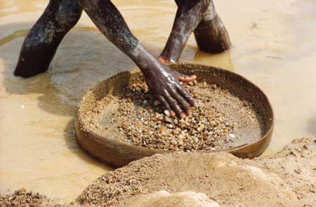A miner in Kono District, Sierra Leone, searches his pan for diamonds. Diamonds have been used as currency to fund armed conflicts in this region, hence the term conflict diamonds or blood diamonds. The term blood diamonds was first used in the wars in Angola.
Source: Photo courtesy of United States Agency for International Development, http://commons.wikimedia.org/wiki/File:Hands_ondiamonds_350.jpg.
The diamond trade still dominates and political factions still vie for control. Much of the diamond mining is uncontrolled, allowing considerable smuggling operations to operate. After the civil war, revenues from diamond mining increased from less than $10 million in 2000 to an estimated $130 million in 2004. The civil war destroyed the infrastructure of the country, and most of the resources were looted by forces on one side or another. The economy has had a difficult time recovering. Most of the people make their living in subsistence agriculture. Medicine, food, and goods have been in a short supply. Many people have died due to the lack of these items during and after the civil war. Today the country struggles to recover and work toward stabilization.
To fully understand where Liberia is today as a country and as a people, one has to understand its background and its geopolitical history. Liberia has a unique background in that it was not a European colony and was not included in the Berlin Conference of 1884 as a country up for grabs in the scramble for African territory. The conference of colonial European powers who divided up Africa did establish borders for the majority of African countries. Liberia, which means “Land of the Free,” was a destination for freed slaves from the United States. In 1847, Liberia became an independent country patterned after the US government, even naming its capital Monrovia after President James Monroe, the fifth US president. Many of the freed slaves from the United States returned to Africa and relocated to Liberia. The slavery experience in the United States gave returning Africans a different culture and history from those indigenous to the African continent. Assimilation between the two groups was difficult. The division between the Americanized settler communities along the coast and the indigenous Africans of the interior continued to widen over the years.
Figure 7.22 School Scene
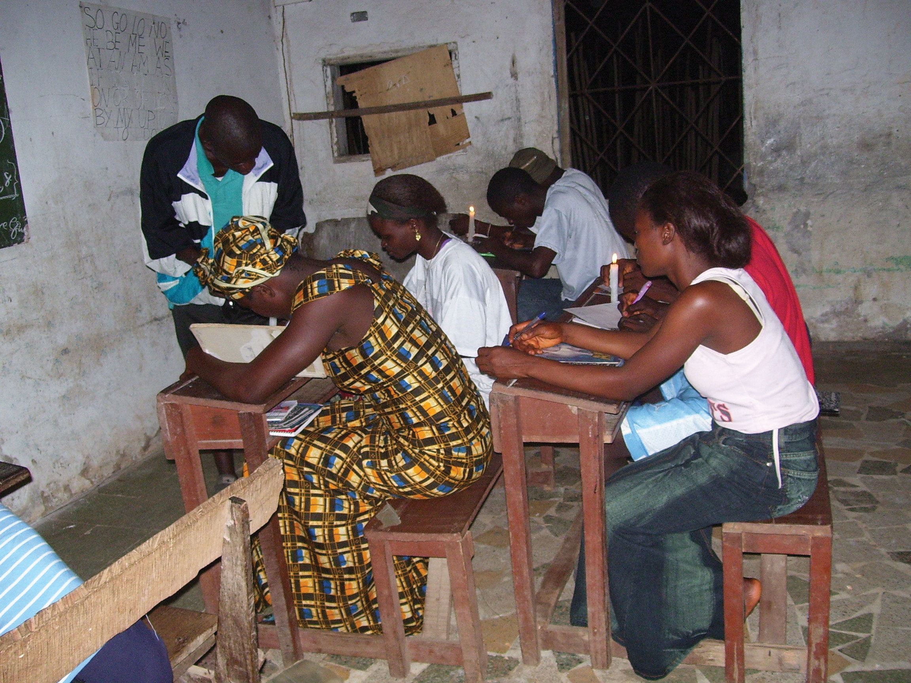Students in Liberia study by candlelight to catch up on missed time during the civil war.
Source: Photo courtesy of United States Agency for International Development, http://commons.wikimedia.org/wiki/File:Liberian_students.jpg.
Centrifugal forces within the country surfaced in 1980 when a military-backed coup overthrew the government. This event became a turning point that escalated into social division and political unrest. Elections were held in 1985, which resulted in accusations of election fraud. Successive coups by various factions continued to plague the political arena. By 1989, civil war had commenced. Military forces from the neighboring countries of Ghana, Guinea, Senegal, and Nigeria entered the conflict. Whoever was in charge of the government at any one time had plenty of opposition from the various factions. A warlord by the name of Charles Taylor became a major player and eventually took control of the government in 1997 following a bloody insurgency in the capital.
US marines were deployed to protect the US embassy and personnel. Nigerian military troops pushed into the conflict. By 2003, more than fifteen thousand UN peacekeeping soldiers were active in Liberia. The power of the government was reduced to a minimum, and the warlord president Taylor was allowed asylum in Nigeria and later brought before the UN court in The Hague for war crimes against humanity. In the end, more than two hundred thousand people were killed and the country was devastated. With UN troops bringing stability, the 2005 presidential election brought Ellen Johnson-Sirleaf, an economist with a Harvard degree. She became the first elected female head of state in Africa.
Poverty and the lack of goods and services have been a persistent problem for the people of Liberia. An agrarian society, few global corporations have made investments because of the long-standing civil war. As was true for Sierra Leone and other African countries such as Angola, the diamond trade helped fund the civil war. Diamonds from Sierra Leone had an estimated export value of more than $300 million annually in 2010. Diamonds from these countries are often called blood diamondsDiamonds used as currency to fund civil war or armed conflicts. because of their use as currency to fund death and destruction. The concept of blood diamonds originated in the civil war in Angola years earlier. The UN banned the export of blood diamonds from Liberia during the war and finally lifted the ban in 2007. Looting and corruption by warlords and military forces pillaged the country’s other resources, leaving most of the population with few opportunities and advantages for the future.
The former French colony of Ivory Coast is often referred to by its French name: Côte d’Ivoire. Before independence in 1960, Ivory Coast was one of France’s most prosperous West African colonies. During the 1960s and 1970s, the economy grew, and its production of cocoa beans became the largest in the world. Its coffee production became the third highest in the world after Brazil and Colombia. Ivory Coast is the leading exporter of palm oil and pineapples in Africa. The potential for economic prosperity remains but has been diminished over the past two decades because of the economic downturn in commodity prices and political instability that resulted in a devastating civil war.
From 1960 to 1993, the country only had one political leader. Though this brought continuity to the government and the economy grew in the early years, authoritarian rule resulted in civil unrest and dissatisfaction with the conditions in the country. Coups in 1999 and 2001 triggered the beginning of political division. Rebel leaders from the northern part of the country challenged the government’s legitimacy and pushed for land reform and a change in citizenship qualifications. Rebel groups took over the northern regions and vied for control over the prime cocoa-growing lands. Fighters under warlords and militias from Sierra Leone and Liberia encroached on the western sectors to gain a foothold. By 2003, French troops patrolled the western border region to provide security and stability. The country experimented with a unity government, but this broke down when the rebel groups failed to disarm. By 2007 the government and rebel leaders from the north worked out an agreement to reunite the country and dismantle the dividing zone between the north and south. French and UN troops remain to help implement the peace process.
Figure 7.23 A Woman in Abidjan, Ivory Coast
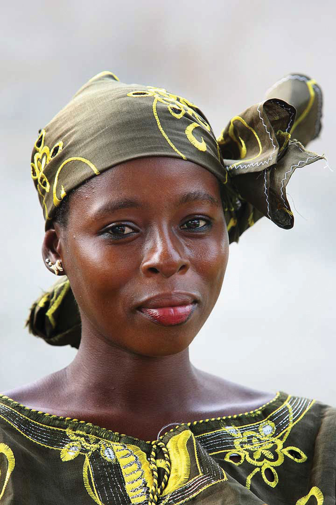Muslims, Christians, and animists are about evenly split in Ivory Coast. An estimated sixty-five languages are spoken here. Family size has been quite large but is slowly decreasing with urbanization.
Source: Photo courtesy of Steve Evans, http://commons.wikimedia.org/wiki/File:Ivorian_woman.jpg.
The people of Ivory Coast are highly diverse. Religious affiliations are evenly split between Muslim, Christian, and animist. The economic success in agricultural production and recent oil exploration have attracted people from neighboring countries seeking opportunities and advantages. After the 2007 political agreements, approximately 20 percent of the population was made up of immigrant workers from neighboring countries, which are predominantly Muslim. The small percentage of non-Africans are from France, Lebanon, Vietnam, and Spain. There are also a high number of missionaries from North American Protestant churches. Attacks against non-native-born citizens have occurred; qualification for citizenship is a major concern, and natural-born citizens often support stronger restrictions on nonnatives becoming citizens or holding political offices.
Named after the former Ghana Empire, the region of the Gold CoastCoastal area off West Africa in the region of the current country of Ghana. was home to the Ashanti kingdom, which thrived on the slave trade. Many of the European colonial powers had sought to build fortified beachheads on the coast and profit from the lucrative trade in slaves, gold, and ivory. In the end it was the British that dominated the region and established the Gold Coast colony. The push for independence came in 1957. Ghana was the first European colony to gain independence in Subsaharan Africa.
Ghana remains a poor country, but it is endowed with natural resources. Even with half the population employed in agriculture, the country is experiencing positive economic growth. Gold and other mining operations contribute to the economy. Individual remittances and foreign aid remain a necessary component of the country’s economic well being.
Kwame Nkrumah was the first prime minister and the first president. He advocated for a Pan-AfricanMovement to create African unity across the continent. concept that would pull the African countries together, oppose neocolonial activity, and increase trade and interaction within the African community. His ideas were welcome and are still celebrated, but his authoritarian rule brought about his downfall. In 1966, he was ousted in a military coup and exiled to Guinea. The political dynamics that followed were typical of the region: a pattern of corruption, coups, and authoritarian rule. It was not until 1981, when Jerry Rawlings came to power, that all political parties were banned and a new constitution was introduced. By 1992, the political parties were reinstated and the country began to experience political stability and democratic rule, which has endured to the present, making Ghana one of the most stable democracies in Subsaharan Africa.
Figure 7.24 Fishing Boats on the Coast of Ghana
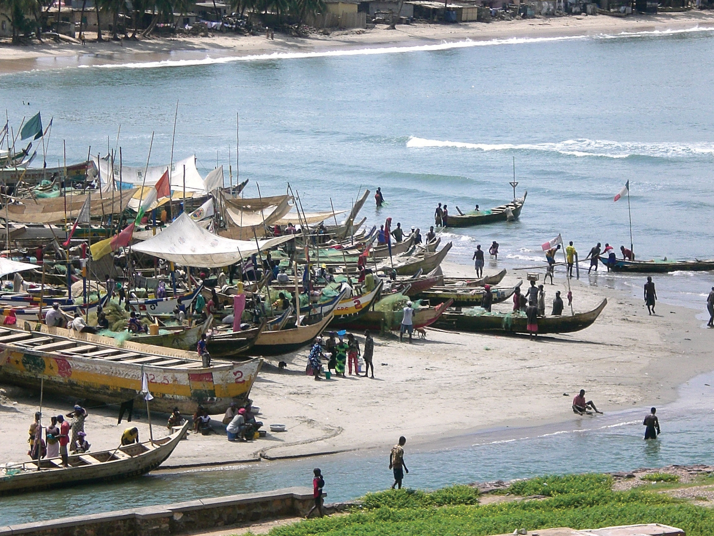Ghana is a former British colony and was one of the first African colonies to gain independence (1957). Fishing is still a major economic activity along the coast.
Source: Photo courtesy of Janet Gross.
Ghana is diverse in its people and in its physical geography. The physical terrain ranges from coastal plains and interior hills to the large Volta basin in the center. The Volta River was dammed up to produce hydroelectric power, resulting in the world’s largest artificial lake, Lake Volta, which covers a large portion of eastern Ghana. The cultural diversity is exemplified by many ethnic groups, more than eighty languages, and at least double that in the number of dialects spoken within the country. English is the official language and is used in all public education. Funding for education has been available, and the people have access to quality educational services and an increasing agenda of social services. Ghana is showing promise in providing its people with a stable and thriving prospect for growth and opportunities.
Upstream on the Volta River is the former French colony of Upper Volta. In 1960, the former French colony attained full independence, and its name was changed in 1984 to Burkina Faso, meaning “the country of honorable people.” Burkina Faso is a landlocked nation without a port city. The country lacks natural resources and has few industries. Subsistence agriculture is the main economic activity for about 90 percent of the population. Droughts and desertification continue because of overgrazing of the land and the natural southward shift of the Sahara Desert. Rainfall varies from forty inches in the south to only ten inches in the north. This is one of the poorest nations on Earth.
Political unrest and a series of military coups after independence have not provided stability. The current president has been in power since 1987 and continues to win in presidential elections. New limits may restrict his term in office past 2015. Many people seek employment in the neighboring countries of Ivory Coast and Ghana. This extremely poor nation occupies the second-to-last place on the UN’s human development index. At less than 25 percent, Burkina Faso has the lowest literacy rate in the world. The poor economy offers few resources to increase educational services.
Both Togo and Benin were French colonies at the time of independence. The Berlin Conference in 1884 accepted Germany’s control over the coastal region that became Togoland in 1905. After World War I, Germany lost this colony and the territory was administered between the British and the French. The French colony of Dahomey eventually became independent in 1960 and changed its name to the People’s Republic of Benin in 1975.
Togo and Benin are both elongated countries with major port cities on the Gulf of Guinea along the Atlantic coast. Benin is about the same size in area as Liberia or the US state of Kentucky. Benin is twice the size in physical area as Togo. The south is a few degrees cooler than the north, where the scrub forests and grasslands of the savanna-type landscape can be more arid, as it is closer to the African Transition Zone. A nature reserve and a national park in Benin’s northern portion attract tourists to see big game animals such as elephants, lions, and hippos in their natural environment. Both countries have a poor economy with most of the people working in agriculture. The political dynamics are similar to other West African states.
Africa’s most populous country is Nigeria. The exact population has been difficult to determine, but 2010 estimates report the population to be just short of 150 million. This is a country of more than 250 different ethnic groups with twice that many separate languages or dialects. English is the official language, along with Hausa, Yoruba, and Igbo (Ibo), all of which are spoken by ten million people or more. The distribution of the major ethnic groups is illustrated by the different regions of the country. Hausa groups are found mainly in the northern region, Kanuri groups in the northeast, Yoruba in the southwest, and Igbo (Ibo) in the southeast. Ethnic division has also caused serious confrontations and violence. In 1967, a separatist movement in the eastern Igbo region created the independent nation of BiafraSeparatist republic in southeastern Nigeria from 1967 to 1970.. This sparked an all-out civil war that lasted more than two years and resulted in more than a million deaths. Political divisions did not end even after the two sides reconciled and the country was united under the same government in 1970. Political instability in Nigeria has resulted in an almost endless number of military coups and government leaders being removed from office.
Figure 7.25 Linguistic Groups in Nigeria
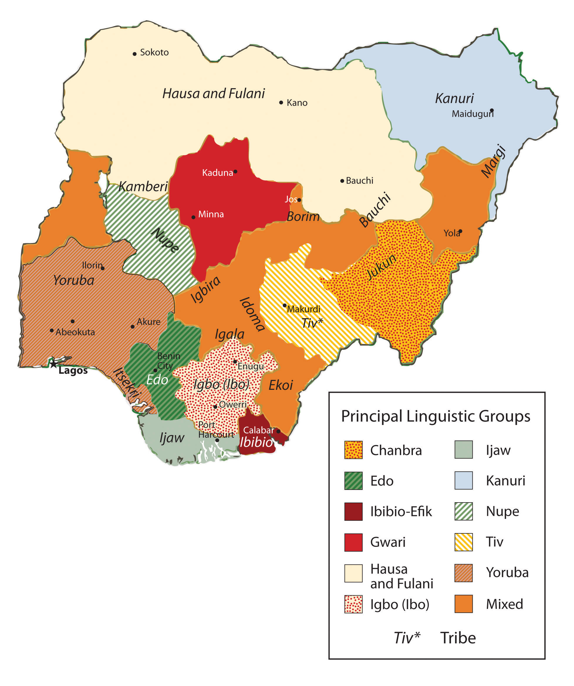There are many linguistic groups in Nigeria but only four main ethnic groups: Yoruba, Hausa, Kanuri, and Igbo (Ibo), each in the four corners of the country.
Map courtesy of University of Texas Libraries, http://www.lib.utexas.edu/maps/africa/nigeria_linguistic_1979.jpg.
Figure 7.26 Making Music in Nigeria
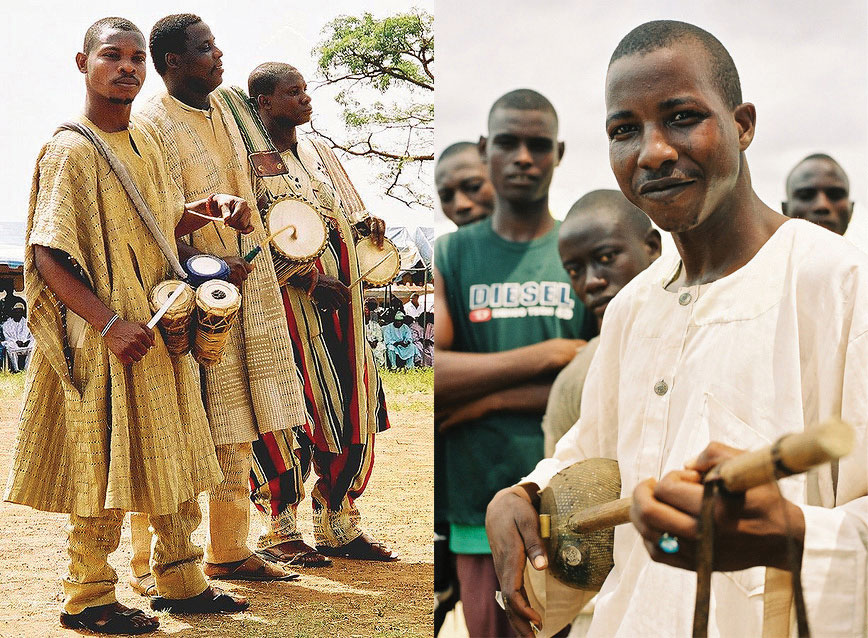Yoruba drummers perform at a local event (left). A Hausa harpist (right). The Hausa are located in the northwest part of the country, which is mainly Muslim. The Yoruba are located in the south and are mainly Christian.
Sources: Photos courtesy of Melvin “Buddy” Baker, http://www.flickr.com/photos/58034970@N00/178631090 and http://www.flickr.com/photos/i_level_news/184542488.
The size and diversity of this country create a host of centrifugal forces that can bring about divisions along any number of cultural lines. Religious issues add to the political instability. The north is mainly Muslim, as it is located in the African Transition Zone. The south is mainly Christian. A large percentage of the population follows animist religions with many different traditional beliefs. Clashes have erupted in the streets that pit Muslims and Christians against each other. Several northern provinces have pushed to have the Sharia criminal code made into the area’s civil law. There are regions where it is not uncommon for people to have a mix Christian and animist beliefs.
Family size has been large in Nigeria, which has caused an exploding population. Statistically, Nigeria has more people of African heritage than any other country in the world. The population density is equivalent to having half the population of the United States pushed into an area the size of Texas and Oklahoma. Most of the population makes their living on subsistence agriculture, but millions are employed in the growing urban service sector. Nigeria’s main economic engine is the oil industry, which accounts for up to 80 percent of government revenues and is the number one export product. Nigeria is a member of the Organization of Petroleum Exporting Countries (OPEC) and is one of the world’s top ten oil-exporting countries.
The lucrative oil business has attracted many seeking to share in the profits. The government’s distribution of oil revenues has brought about even more infighting, corruption, and mismanagement within the political leadership. Rebels and militant groups along the Niger Delta, where most of the oil activity is located, have attacked the oil industry’s infrastructure and taken workers hostage. They want a larger share of the revenues to remain in Nigeria and to go to their people rather than the government or CEOs of international corporations.
Poverty, a low standard of living, the lack of opportunities and advantages, a poor educational system, or the lack of social services does not diminish the human spirit. Confronting all these issues and more, the people of West Africa and Nigeria are vibrant, energetic, and hard working and value the institutions of family and religion. Just because they have not transitioned to a consumer society does not mean they cannot find fulfillment and happiness in their lives. A survey conducted by social scientists in 2001 and reported by BBC News in 2003, indicated that Nigeria had the highest percentage of happy people of any country in the world at that time. The status of each country may change from year to year, but the interesting part is that the survey confirmed that money or income level does not always equate to happiness. Countries such as Nigeria, with a low level of per-capita income, can still highly value their heritage and the traditions that revolve around their family and community and transcend the global push for economic gain and the possession of consumer items. Much can be said for the vibrant cultural attributes of the people of West Africa and its developing countries.
Identify the following key places on a map:
Central Africa covers a large physical area that can range from desert conditions to the north in Chad to tropical rain forests and mountains in the equatorial region of The Congo. The entire region is roughly the same size as the United States west of the Mississippi River. The countries included in the region vary with different organizations or geographic perspectives; in this textbook, the countries include Cameroon, Congo, Chad, the Central African Republic, Gabon, Equatorial Guinea, the Congo (Zaire), Rwanda, and Burundi. Located off the west coast of Central Africa is the small twin island country of São Tomé and Príncipe. Burundi and Rwanda are often included in the region of East Africa, but their connection to the Congo makes them more relevant to the Central African region for the purposes of this textbook.
The equator runs through the middle of Central Africa. Type A climates are dominant in the region, complete with tropical rain forests and jungle environments. In the north is the African Transition Zone, which runs through Chad. In Chad, the arid region of the Sahara Desert transitions into the humid tropics. Central Africa usually only includes portions of Subsaharan Africa south of the African Transition Zone. Southern Chad exhibits qualities similar to Central Africa, and the northern areas exhibit qualities similar to North Africa or the northern regions of Niger, Mali, or Mauritania.
The physical geography varies with each country in Central Africa. The most prominent physical landscape is the tropical rain forests of the equatorial region. Highlands can be found in both the western and eastern regions of Central Africa. The Cameroon Highlands are a product of a geologic rift in tectonic plates that created São Tomé and Príncipe, the island portion of Equatorial Guinea, and the mountainous portions of the mainland on the border between Nigeria and Cameroon. There are a number of volcanoes in Cameroon. The only currently active volcano and the highest in elevation is Mt. Cameroon, at more than thirteen thousand feet. Mt. Cameroon emitted a cloud of carbon dioxide in 1986, killing more than 1,700 people. The volcano last erupted in 2000. In the crater of one of the volcanic peaks is Lake Nyos.“Mount Cameroon,” http://www.cameroonconsul.com/mount.html; “Mt Cameroon Volcano—John Seach,” Volcano Live, http://www.volcanolive.com/mtcameroon.html.
Lake Chad in the north is a large, shallow body of water that lies on the border of Chad, Niger, Nigeria, and Cameroon. The size of Lake Chad varies widely because it expands and contracts with the seasonal variations in precipitation. Lake Chad provides water for local livestock and fishing for millions of people. Its location on the border of four countries has caused political infighting over local water rights, which are valuable commodities in such an arid climate. The average depth of Lake Chad ranges from five to thirty five feet. Climatic conditions and diversion of the lake for human purposes have caused the water to recede. If these conditions continue, the lake might virtually disappear by the end of the twenty-first century, which would have disastrous effects on both the human population around the lake and the biodiversity. Waterfowl, crocodiles, fish, and a host of other creatures depend on Lake Chad for their survival, and its loss would create an environmental catastrophe.
Figure 7.27 Central Africa

Chad is often included in other regions, but in this text it is included with Central Africa. The Congo River is the main river of this region.
Source: Updated from map courtesy of University of Texas Libraries, http://www.lib.utexas.edu/maps/africa/txu-oclc-238859671-africa_pol_2008.jpg.
On the eastern border of the Congo is a portion of the Great Rift Valley, which extends from Southern Africa in Mozambique to Lebanon in the Middle East. Lake Tanganyika and Lake Albert are two of the larger lakes in Central Africa along the western section of the Great Rift Valley. Lake Tanganyika is more than 418 miles long and runs the entire length of the boundary between the Congo and Tanzania. These are deepwater lakes. Lake Tanganyika is the world’s second-deepest lake, with a depth of 4,800 feet. Because of its depth, it is also the world’s second-largest lake by volume after Lake Baikal in Russia, which has the record for both volume and depth.
Fish and fresh water from Lake Tanganyika support millions of people who make their living directly from the lake’s resources or who live in the surrounding area. The Great Rift Valley is bordered by high mountains such as the Rwenzori Range and its highlands, which include active volcanoes. A number of volcanoes are located in the Congo, not far from the border with Rwanda. In 2002, Mt. Nyiragongo, a volcano with an elevation of 11,358 feet in the eastern highlands of the Congo, experienced a series of eruptions that killed a few dozen people, destroyed thousands of buildings, and caused the evacuation of as many as four hundred thousand people. Various volcanoes in this range have active lava lakes in their craters at their peaks.
At the heart of Central Africa are the massive Congo River and all its tributaries. It is the deepest river system in the world and has some stretches that run more than seven hundred feet deep, providing habitats for a wide range of organisms and fish species. The Congo River basin is second only to the size of the Amazon basin in South America. Home to Africa’s largest tropical rain forest, this region is host to a massive variety of plant and animal species, which create an extensive environmental resource base. Human activity has been encroaching on this valuable environmental region filled with extensive biodiversity. Logging, slash-and-burn agriculture, and civil war have devastated large areas of the Congo basin, resulting in the loss of habitat for many tropical species.
Figure 7.28 Living on the Edge

This mountainside home is located in the Rwenzori Mountain range in the eastern region of the Congo. Elevations can reach as high as 16,761 feet. Some peaks are snow-capped with permanent glaciers.
Source: Photo courtesy of Dylan Walters, http://www.flickr.com/photos/50169083@N00/1204360972.
Deforestation activities have been on the rise in Central Africa and the Congo basin. Endangered primates such as chimpanzees and gorillas, along with monkeys and game animals, have struggled to adjust to the shrinkage of their habitat and the decline of their population. The endangered mountain gorillas in the northern region of the highlands have gained attention through the efforts of professional scientists such as Dian Fossey who have attempted to understand and preserve their ecosystems. Mountain gorillas have been dwindling in numbers because of poaching, civil war, and hunting. It will take concerted preservation activities for gorillas to survive in their native habitat.
The two landlocked countries of Chad and the Central African Republic have endured unstable conditions in their transitions to independent, stable democratic states. Chad had been in dispute with Libya over the Aozou Strip bordering their two countries, an area deemed rich in minerals and uranium, but in 1994, Chad was awarded sovereignty over the Aozou Strip by the United Nations (UN) International Court of Justice. Chad is a temporary home of more than 250,000 refugees from the ethnic cleansing campaign in the Darfur region of the Sudan. Thousands more from the Central African Republic have sought refuge in Chad. Meanwhile, Chad’s government has been plagued with corruption and mismanagement, a state of affairs that has hampered its efforts to offer humanitarian aid to its refugees. Similarly, the Central African Republic is troubled by a history of unstable and short-lived democratic governments. Military coups and transitional governments are frequent. Civil unrest erupts into chaos. Rebel groups control large parts of the countryside. It is difficult for the people to access reliable public services such as health care, education, and transportation systems when the government is not functioning adequately.
Figure 7.29 A Tailor in Chad

Chad is a poor country with existing political conflicts and many refugees from Sudan. The man in this photo is using an old manual sewing machine to make clothes.
Source: Photo courtesy of Mark Knobil, http://www.flickr.com/photos/36448457@N00/66825084.
Cameroon and Gabon have more stable governments than Chad or the Central African Republic. Still, they are not without political issues. Cameroon was a German colony as a result of the Berlin Conference of 1884 where the colonial European countries divided up Africa. It remained so until after World War I, when it was divided between the British and the French. Finally, in 1961, the two sides were merged into one country under one government. The two hundred or so different ethnic groups place pressure on the government to address social concerns. Even though the government has become stable more recently, social pressures between traditional groups and groups with a European colonial background have erupted into social unrest. The European Anglo factions have gone so far as to threaten to separate the once-British portion and secede from Cameroon.
Formerly a French colony, Gabon has transitioned to independence successfully. The country’s small population of about 1.5 million people, along with adequate natural resources, has facilitated Gabon’s development into a country with a relatively stable democratic government and a higher standard of living. Gabon is geared toward attracting more foreign investments and continues to progress forward in the index of economic development. As of 2010, Gabon was edging toward stage 3, the highest level in Central Africa for a country as a whole.
Equatorial Guinea and the island nation of São Tomé and Príncipe are small countries on the west coast of Central Africa. Serious violence erupted in the former Spanish colony of Equatorial Guinea after it gained independence in 1968. The first elected president governed through authoritarian rule, and after a few years in office, he unleashed a reign of terror that resulted in the death of more than one-third of the population and totally neglected the country’s public service sector and infrastructure. He was overthrown and executed by his successor, who then implemented authoritarian measures to make sure he would remain in power and continue to control all the revenues from the extensive oil activity in the offshore waters around his country. The billions in oil revenues have remained in the hands of the president and his family-controlled cabinet. Equatorial Guinea is Subsaharan Africa’s third-largest oil exporter; however, most of the country’s citizens have benefited little from the vast wealth of the lucrative oil industry.
Figure 7.30 Cultural Artifacts

A mask from Gabon, in the Ogowe River region, made by the Tsogo people. The mask, made in the late nineteenth to early twentieth century, is made out of wood with natural pigments. Masks are a common part of cultural rituals or festival events.
Source: Photo courtesy of cliff1066™, http://www.flickr.com/photos/nostri-imago/2923626512.
The former Portuguese colony of São Tomé and Príncipe consists of two small islands off the coast of Gabon. The islands received their independence in 1975, but that’s when their problems in establishing a stable government began. Political turmoil delayed the arrival of democratic reforms for a decade. Elections for leadership were not held until 1991, and after the elections, leadership changed repeatedly because of political infighting. In 1995 and 2003, two coups were attempted without success. The democratic process has been complicated by offshore oil discovery, which has brought an influx of outside workers and media attention to the country. Multinational oil companies have begun to invest heavily in the development of oil production in the region.
Rwanda has been severely affected by the difficulties typically associated with the transition between colony and independent nation. Ethnic divisions manipulated by the colonial masters erupted to challenge the country’s stability and future. The division between the Tutsis and the Hutus has deep historic roots. In 1994, the centuries-old conflict between the two ethnic groups erupted into violence of unprecedented proportions and resulted in the senseless killing of hundreds of thousands of innocent people. The Hutus amassed large militias and took revenge on the Tutsis for years of oppression. Hutu militias rounded up and killed all Tutsis, moderates, and anyone not supporting the Hutu cause. The killing of hundreds of thousands of people continued from city to city throughout the countryside. Within a few months, the genocide is estimated to have caused the death of as many as a million people.
The atrocities of the Rwandan genocide extended across the population. Men, women, and children were encouraged to kill their neighbors by hacking them to death with machetes. If they refused to comply, they themselves were threatened with death. Victims were herded into schools and churches, where they were massacred and the buildings would be burned to the ground. As people fled the region, the number of Tutsi refugees entering neighboring countries ballooned to more than a million.
Figure 7.31 Refugee Camp

An estimated 1.2 million Rwandan refugees fled to the Congo (Zaire) after a civil war erupted in Rwanda. Many are still in the Kibumba refugee camp, shown here covered a smoky haze.
Source: Photo courtesy of the CDC, http://commons.wikimedia.org/wiki/File:Rwandan_refugee_camp_in_east_Zaire.jpg.
Tutsi rebels finally gained strength, defeated the Hutu militias, and ended the slaughter. Fearing retribution for the more than one million Tutsis who had been massacred, more than a million defeated Hutus fled as refugees across the borders into Uganda, Burundi, the Congo, Uganda, and Tanzania. Refugee camps housing thousands of people each were hastily constructed without proper sanitation or supplies of drinking water. Diseases such as cholera and dysentery swept through the camps and killed thousands of refugees. The country of Rwanda was left divided and devastated.
The aftermath of the genocide and conflict continues to incite civil unrest and political division in Rwanda. The search for common ground between the different ethnic groups is divisive and conflict ridden. Now Tutsi leaders dominate the Rwandan government.
The entire Central African region was devastated by the massive shifts of refugees and the brutal killing of so many people. The competition for the control of resources and the increase in military arms along the Zairian border became a major component of the civil war that plagued the Congo (Zaire) during the same period. Up to five million people died in the Congo because of warfare, disease, and starvation. The wars in the Congo involved military actions by the Tutsis from the Rwandan and Ugandan governments and Hutu militias.
The small country of Burundi also has been caught up in the conflicts in Rwanda and the Congo. Germany claimed the region of Burundi as a colony in the European scramble for Africa’s resources. After World War I, they handed Burundi over to Belgium. Burundi and Rwanda were both part of Belgium’s African colonial empire and were together called Ruanda-Urundi. The two countries were later separated. Burundi achieved independence in 1962. Unfortunately, the ethnic conflict between the Hutus and the Tutsis that tore apart Rwanda in the genocidal war in 1994 had also plagued Burundi. In 1965, the military was controlled by Tutsi leadership. When the Hutus revolted, they were repressed. The entire government came under Tutsi control. Hutu attacks in 1972 resulted in a systematic retaliation by the Tutsis that killed approximately 200,000 Hutus and forced another 150,000 to flee the country. Civil unrest between these two groups continues to plague the political and social structures of Burundi.
The names of the Democratic Republic of the Congo (a former Belgian colony) and the Republic of the Congo (a former French colony) are confusing. At one point after they had become independent, both countries chose the name Republic of Congo. To keep them straight, they were commonly referred to by their respective capital cities—that is, Congo-Leopoldville (the larger eastern country, also known as Zaire) and Congo-Brazzaville (the smaller western country). The larger former Belgian colony has since become simply The Congo or is referred to unofficially as the Belgian Congo, and the smaller former French colony has become Congo. In 1966, Joseph Mobutu, the political leader of the Congo, officially changed the nation’s name to Democratic Republic of the Congo. In 1971, the name was changed to the Republic of Zaire. In 1997, after a bitter civil war and the overthrow of Mobutu, the new president, Laurent Kabila, changed Zaire back to the Democratic Republic of the Congo, often referred to as the Congo. To keep the two names separate, many refer to the Congo as Congo-Zaire.
The confusing name situation exemplifies the difficulties and changes in government leadership that have transpired since colonial times in the two countries. The former French colony to the west side of the Congo River has survived with fewer conflicts than its eastern neighbor but has not escaped civil war. From 1997 to 1999, Congo had a harsh civil war, and the end result was the overthrow of a democratically elected president and the installation of a former president. Tens of thousands are reported to have been killed. Related conflicts erupted in various regions that extended into 2003 before they were finally resolved.
The former Belgian colony of The Congo is nearly as large as the United States east of the Mississippi River and is a challenge to govern. The population—distributed between about 250 different ethnic groups and about as many languages—was estimated at about seventy million in 2010. Authoritarian rule from political leaders such as Mobutu from 1965 to 1997 polarized the country’s many factions and played world leaders against each other. The Congo acted as a swing state in the Cold War between the United States and the Soviet Union. As mentioned, Mobutu changed the name of the country and pillaged the country’s finances for personal gain. He stashed away for himself billions of dollars in public funds in foreign bank accounts that should have been spent on the people of the country.
The two wars in The Congo has resulted in the highest number of deaths since World War II. The First Congo War (1996 to 1997) occurred when President Mobutu was overthrown by militant forces led by rebel leader Kabila, who was a long-standing political opponent of Mobutu and was backed by Ugandan and Rwandan militant groups. Mobutu was eventually forced from office and fled the country. Kabila declared himself president and changed the official title of the country from Zaire back to Democratic Republic of the Congo. This transition in political power caused a shift in the militant rebel groups, which created the conditions for the Second Congo War (1998 to 2003), which was even more brutal than the first. The assassination of President Kabila in 2001 permitted his adopted son Joseph Kabila to take power and run the country up to the present.
Figure 7.32 Soldiers in The Congo

In this photo, General Kisempia, former chief of staff for Joseph Kabila, inspects his troops. About five million people died in warfare in the Congo 1996–2003.
Source: Photo courtesy of Themalau http://commons.wikimedia.org/wiki/File:Kisempia.jpg.
The Second Congo War raged through the Congo, bringing destruction to the country and the deaths of millions of people. Besides political control of the country, a main objective of the combatants was to dominate the resource-rich eastern sector of the country, where valuable reserves of zinc, diamonds, copper, and gold can be found in the eastern region. Before the war ended, the surrounding countries of Angola, Zimbabwe, Namibia, Uganda, and Rwanda had troops fighting on one side or the other. The civil war formally ended in 2003 when rebel groups and the government worked out a shared political arrangement. Many rebel groups remained engaged in the eastern region of the Congo long after the agreement was reached. The total number of deaths resulting from the civil wars in the Congo was estimated in 2008 at about 5.4 million—the majority by the war and the remaining by disease or starvation.“Crisis Caused 5.4 Million Deaths in Congo, Report Says,” AmericanRenaissance.com, http://www.amren.com/mtnews/archives/2008/01/crisis_caused_5.php; “DR Congo War Deaths ‘Exaggerated,’” BBC, http://news.bbc.co.uk/2/hi/africa/8471147.stm.
Armed military conflicts in the Congo did not end with the Second Congo War. Conflicts continue in the eastern region. These armed confrontations are often referred to as the Kivu conflict because they are taking place in the provinces of North and South Kivu in the Congo’s eastern region along the borders with Rwanda and Burundi. Rebels are fighting against forces from the Congo and Rwanda. As recently as 2009, fighting continued deep in the interior of Central Africa near the Rwandan border between various militias. Such conflicts are not widely reported by news outlets in core areas such as the United States.
People in the Congo are still dying because of the devastation of the war. Those not killed in actual warfare are dying of hunger and disease where food, medicine, and health care are not available. The death rate in 2008 was estimated to be as high as forty-five thousand people per month in the eastern and central regions—many of them children. Survivors of the bloody civil war report horrendous terrorist campaigns conducted by various militias that used mass rape, mutilation, and torture as a means of control and social pressure. The UN had more than eighteen thousand troops in the Congo as of 2007 to help curb the civil unrest and militant activities.
Understanding that most wars are fought over the control of resources is a major step in comprehending the conflicts in Central Africa. The conflicts in the Congo are likely to continue because of vast caches of mineral wealth in the country that have yet to be extracted. Economic pressure to control the extraction activities of saleable raw materials is often the driving force behind rebel groups in places such as the Congo. Local factions usually sell the raw materials for prices well below market value.
The sale of precious minerals such as cobalt, coltan, gold, and diamonds has helped fund the wars in the Congo. The country produces more cobalt ore than any other country in the world. Cobalt is a valued metal used in aircraft engines, medical implants, and high-performance batteries. The major mining operations for cobalt ore are located in the southeastern Katanga state, where there are also large reserves of copper.
Figure 7.33 Minerals in The Congo

This map shows the locations of major minerals in the Congo. Other minerals can also be found in the region.
Source: Updated from map courtesy of Andreas 06, http://commons.wikimedia.org/wiki/File:Blank_Map-Africa.svg.
Coltan is a mineral that tantalum comes from, which is highly prized for its use in capacitors for electronic circuits. Tantalum is found in most modern electronic devices in high demand worldwide, from video game systems to cell phones. Most of the coltan in the world comes from mines in the Congo in the eastern Kiva regions. The eastern region is also home to a high percentage of the world’s industrial diamond reserves. Other minerals and ores are also found in abundance in the region. The sale of precious gems and rare minerals can bring huge profits, but the wealth seldom reaches the hands of those that labor in the mines in the extraction process.
Learning about the geopolitics of Central Africa is critical to developing an understanding of how colonial activity gave shape to Central African countries and why multinational corporations are now highly involved in creating the demand and markets for the resources found there. The core economic regions of the world require the raw materials and resources that are extracted from peripheral places such as the Congo to fuel their economic activities and to bring profits to their shareholders. The core economic players in the global markets are also some of the largest arms manufacturers that sell weapons to the local factions involved in the battle for control of the valuable resources. Globalization connects the core to the periphery. In resource-rich places such as the Congo, this relationship is only going become more interactive.
Figure 7.34 Football in Burundi

A Sunday-afternoon football match takes place in Bujumbura, Burundi. The government has instituted a law that forbids any Burundians from participating in any activity that does not contribute to the communal good before 10 a.m. on a Saturday morning. Street cleaning, family events, and government tasks are examples of acceptable activities. Notice the livestock grazing on the edge of the field.
Source: Photo courtesy of Geordie Mott, http://commons.wikimedia.org/wiki/File:Le_Match.jpg.
Sports and entertainment seem to be a universal human activity. Football (American soccer) is the dominant sport in the Central African states. Football can be found in even the poorest areas. The low-cost sport is accessible to most citizens of each country. Other traditional sports include wrestling, archery, and track-and-field events. In Chad, for example, a type of freestyle wrestling in which the wrestlers wear animal hides and cover themselves with dust to prepare for the match is widely practiced. Canoe racing can be seen in Cameroon. Board games such as mancala, a count-and-capture African stone game, are also common. Western-style sports such as basketball, baseball, and cricket are played in many of the urban areas. Olympic sports are practiced in countries as skill, ability, and funding provides.
A great variety of cultural traditions spring from the thousands of ethnic groups, distinct languages, and different religious beliefs found in Africa. Cuisine and drink vary as widely as the people’s traditions and are important elements of any celebration or festivity. Every country has its own unique way of promoting and celebrating its cultural diversity. Even poor countries such as Chad possess a rich cultural heritage. Chad has opened its own Chad National Museum and the Chad Cultural Center. Rwanda, with its civil wars and ethnic divisions, still honors its holidays with ceremonies and celebrations. The people of Central Africa find time and energy to celebrate life.
Figure 7.35 African Beer

Tusker is a popular African beer sold throughout the world.
Source: Photo by R. Berglee.
Food and drink differ with location, but most African countries brew some type of beer or alcoholic beverage. Ginger and honey beers are commonly brewed. Local resources, customs, and tastes determine the types of beer brewed in a particular region. In Cameroon, palm wine or millet beers are the traditional mealtime drinks. In Burundi, when close friends gather, they may drink beer from a large container, each with his or her own straw, as a symbol of unity. Popular in the Subsaharan side of Chad is a red millet beer called billi-billi. Beer brewed from white millet in Chad is called coshate. The Muslim populations in most countries do not traditionally consume alcohol, but alcoholic beverages are more common south of the African Transition Zone, where there is a mainly Christian population.
Many rural and urban women in the Central African Republic transform food crops into beverages for sale in the informal economy. Hard liquor and beer are common products that can be brewed or distilled from grains, sorghum, or other local crops. For religious reasons, some people do not drink alcoholic beverages. Juices and soft drinks are available as well as coffee and tea, which are the more traditional beverages of the region. Coffee is grown in the tropics, a climate prevalent in many of the countries in Subsaharan Africa. Coffee or tea is a major export product of almost all the Central African countries. In many areas, tea was introduced through colonial diffusion and has become not only a preferred beverage but an export product. Coffee has been the number one export product of Rwanda and Burundi for many years. Neighboring Uganda is the third-largest coffee producer in Africa after Ethiopia and Ivory Coast; all three are among the top dozen coffee producers in the world.
Figure 7.36 African Coffee

Growing coffee is a major economic activity in Africa.
Source: Photo courtesy of Rex Roof, http://www.flickr.com/photos/rexroof/266242059.
The cuisines of Central Africa can be as diverse as each local population, but they have retained much of their local tastes and flavors based on available ingredients. The slave trade introduced items that are now quite common, such as chili peppers, peanuts, and cassavas. Nevertheless, food preparation is based mainly on traditional methods. Plantains and cassavas are mainstays often served with spicy sauces and grilled meat. Tomatoes, onions, and spinach are common ingredients. Root crops of yams, sweet potatoes, and maniocs are widely served. Fruits and vegetables are popular. Specialty stews are choice entrees that may contain ginger, okra, chicken, and various spices. Bambara is a favorite sugary porridge with peanuts and rice that is common in Central Africa. Traditional meats of chicken, goat, or beef are universal, but wild game such as antelope, monkey, crocodile, or whatever is available is widespread. Fish is a main protein source served with other spicy dishes or dried to be eaten later.
Women’s issues remain a concern in Central Africa regarding social equality, economic development, and population growth. The treatment of women reflects the attitudes and traditions of a society. Attitudes and traditions vary with location and with the cultural heritage of an ethnic group indigenous to a given area. Most of the Central African countries in are male dominated, a trend that can be witnessed in local activities or sports, in the construction of the government, or in the sex ratio of the business sector. With an average family size of five or more, few opportunities exist for women to break out of their traditional roles within their culture and receive a secondary education or enter a professional field of employment.
The Central African region has different types of marriages that vary from country to country. Some traditional societies still arrange their children’s marriages, but this practice is becoming less common as tradition confronts more contemporary views. Marriages between two people with different ethnic backgrounds are becoming more widespread in the urban areas. Cities are places where people with diverse backgrounds come together to live and work, which can lead to an increase in mixed marriages. Cosmopolitan areas are also more likely to have connections with outside cultures through media and communication technology and might be more tolerant of diverse traditions.
One of the marriage traditions that exists in regions of Central Africa is polygamyThe practice of a man or a woman having more than one spouse., which is the practice of a man or a woman having more than one spouse. In Africa, as in most places in the world, it is far more likely for a man to have more than one spouse than for a woman to have more than one spouse. Polygamy is practiced in areas where traditional beliefs allow it. Approximately 30 to 40 percent of women in the Central African Republic are in polygamous unions. The law sanctions polygamy as long as spouses are aware of the arrangement and agree to it before they marry. In Cameroon, both monogamous and polygamous marriages are practiced. The average family is large and extended. Monogamous relationships are the standard in Christian areas such as Burundi and in more contemporary urban societies.
Women caring for large families do not always have the opportunity to earn an education or obtain the training required for employment opportunities or professional positions. Circumstances shaped by culture, tradition, or economic necessity are not necessarily supportive of women advancing in the private or public sectors. Even if the legal code of the country does not discriminate against women, traditional practices and the social status of men often keep women from making socioeconomic strides. Many societies are male dominated, and violence against women is still common and even accepted in Central Africa.
Figure 7.37 Congo Woman Weaving

Source: Photo courtesy of di bo di, http://www.flickr.com/photos/bonettodiego/314254523.
One of the worst cases of violence and discrimination against women exists in the eastern regions of the Congo, where abuse against women, including sexual violence and rape, is listed by UN humanitarian officials as the worst in the world. The civil wars in the Congo have created a difficult climate for women, often with tragic results. Violence against women has become an accepted practice in some areas. During the Congo wars, women were often raped and taken as slaves to serve the soldiers. If and when the women were released from captivity, it was not uncommon for them to commit suicide. Improvements in health care, education, and child care are needed to improve living circumstances for women and may in turn positively affect population growth in the region.
Identify the following key places on a map:
East Africa is a region that begins in Tanzania in the south and extends north through the great grasslands and scrub forest of the savannas of Kenya and Uganda and then across the highlands of Ethiopia, including the Great Rift Valley. The region also comprises the countries of Somalia, Djibouti, and Eritrea, which are located in the African Transition Zone between North Africa and Subsahran Africa. Rwanda and Burundi are physically in East Africa but are covered in the lesson about Central Africa because of their border activities with the Congo. The world’s second-largest lake by surface area is Lake Victoria, which borders Uganda, Tanzania, and Kenya. (Lake Superior, on the border between the United States and Canada, is considered the lake with the largest surface area.) Lake Victoria provides fish and fresh water for millions of people in the surrounding region. The White Nile starts at Lake Victoria and flows north to the city of Khartoum in Sudan, where it converges with the Blue Nile to become the Nile River. The source of the Blue Nile is Lake Tana in the highlands of Ethiopia.
Figure 7.38 East Africa

Source: Updated from map courtesy of University of Texas Libraries, http://www.lib.utexas.edu/maps/africa/txu-oclc-238859671-africa_pol_2008.jpg.
The highest mountain in Africa, Mt. Kilimanjaro (19,340 feet), is located in Tanzania near the border with Kenya. The second highest peak, Mt. Kenya (17,058 feet), located just north of the country’s capital of Nairobi, near the equator, is the source of Kenya’s name. Both mountains are inactive volcanoes and have permanent snow at their peaks. They provide fresh water, which flows down their mountainsides, to the surrounding areas. Mountain ranges in the Western Highlands of the Congo have a greater effect on climate than these two massive peaks. For example, the Rwenzori Mountains on the Congo–Uganda border have permanent snow and glaciers and reach elevations of more than sixteen thousand feet. These ranges create a rain shadow effect that cuts off moisture for the region from the westerly equatorial winds.
Figure 7.39 Great Rift Valley of East Africa

The African portion of the rift extends from Mozambique to the Red Sea. The valley is created by the movement of tectonic plates.
Source: USGS, http://pubs.usgs.gov/gip/dynamic/East_Africa.html.
This same effect is created by the highlands of Ethiopia, which reach as high as fifteen thousand feet in elevation and restrict precipitation in areas to the east. The lower level of rainfall transforms much of the region from a tropical rain forest into a savanna-type landscape with few forests, more open grasslands, and sporadic trees. Dry desert-like conditions can be found in a number of places along the Great Rift Valley.
The Great Rift Valley provides evidence of a split in the African Plate, dividing it into two smaller tectonic plates: the Somalian Plate and the Nubian Plate. The Great Rift Valley in East Africa is divided into the Western Rift and the Eastern Rift. The Western Rift runs along the border with the Congo. A series of deepwater lakes run along its valley. On the western edge of the Western Rift are the highlands, which have a series of high-elevation mountain ranges, including the Rwenzori Mountains, the highest in the series. The Virunga Mountains on the Congo–Uganda border are home to endangered mountain gorillas. The Western Rift includes a series of deepwater lakes, such as Lake Tanganyika, Lake Edward, and Lake Albert. Lake Victoria is located between the Western Rift and the Eastern Rift.
The Eastern Rift does not have deepwater lakes; rather, it is a wide valley or basin with shallow lakes that do not have outlets. The lakes have higher levels of sodium carbonate and mineral buildup because of a high rate of evaporation. The differences in water composition of the lakes along the Eastern Rift vary from freshwater to extremely alkaline. Alkaline water creates an ideal breeding ground for algae and other species of fish, such as tilapia, which thrive in this environment. Millions of birds feed off the abundant supply of algae and fish. Birds attract other wildlife, which in turn creates a unique set of environmental ecosystems. The eastern edge of the Eastern Rift is home to the inactive volcanic peaks of Mt. Kilimanjaro and Mt. Kenya. A number of other volcanic peaks are present in the Eastern Rift, such as Ol Doinyo Lengai, an active volcano.
The erosion patterns of the highlands have caused a buildup of sediments on the rift valley floor, creating a favorable environment for the preservation of biological remains, including both human and animal remains. Important fossils and bones of several hominid species have been found in the Great Rift Valley. One of the most famous finds came in 1974 when the nearly complete skeleton of an australopithecine nicknamed “Lucy.” Lucy was discovered by anthropologist Donald Johanson. Noted anthropologists Richard and Mary Leakey have also done significant work in this region. Since the 1970s, remains of hominids from about ten million years ago were discovered in the northern region of the Great Rift Valley. Discoveries at the thirty-mile-long Olduvai Gorge indicate that early hominid species might have lived in the region for millions of years.
Figure 7.40 The Great Rift Valley

Hiking into the Great Rift Valley region in Tanzania.
Source: Photo courtesy of Guillaume Baviere, http://www.flickr.com/photos/84554176@N00/1969101840.
The Great Rift Valley and the surrounding savannas in Kenya and Tanzania are home to some of the largest game reserves in Africa, with a broad variety of big game animals. One of these large regions is the vast Serengeti Plain, located in northern Tanzania and southern Kenya. The governments of Tanzania and Kenya maintain national parks, national game reserves, and wildlife sanctuaries in their countries, most notably in the Serengeti Plain. Legal protection for as much as 80 percent of the Serengeti has been provided. The protections restrict hunting and commercial agriculture and provide protection status for the wildlife. The word Serengeti means “Endless Plains.”
The Serengeti Plain is host to an extraordinary diversity of large mammals and fauna. The largest migration of land animals in the world occurs in the Serengeti. Every fall and spring, as many as two million wildebeests, antelope, and other grazing animals migrate from the northern hills to the southern plains in search of grass and food. The Ngorongoro Conservation Area, which is a UNESCO World Heritage Site, and the Ngorongoro Crater are located on the Tanzanian side of the border. The enormous crater is the basin of an extinct volcano that has been transformed into a protected national park for the animals that graze on the grassy plains. This is a dry region because the Ngorongoro Highlands create a rain shadow for the area.
Figure 7.41 The Serengeti Plains in the Ngorongoro Crater, Tanzania

Source: Photo courtesy of Gary, http://commons.wikimedia.org/wiki/File:Zebras,_Serengeti_savana_plains,_Tanzania.jpg.
Dozens of other protected areas throughout Eastern Africa have been established in an effort to protect and sustain the valuable ecosystems for the large animals that have found their habitat encroached upon elsewhere by the ever-expanding human population. Kenya has more than fifty-five nationally protected areas that serve as parks, reserves, or sanctuaries for wildlife. The Amboseli National Reserve and Mt. Kenya National Park are two of the more well-known protected areas. The “big five” game animals—elephants, rhinoceroses, lions, leopards, and buffalo—and all the other unique animals found in the same ecosystems, translate into economic income from tourists from around the world that wish to experience this type of environment. The national park systems in Uganda and Ethiopia have made provisions to provide more sanctuaries for wildlife in areas where the human population is growing and the political situation has not always been stable.
Germany gained control of the region of what is now Tanzania in their scramble for African territory in the late 1800s. Germany relinquished the colony to Britain after World War I. Off the coast of East Africa is the island of Zanzibar, which has been an island trading post for centuries and drew in shipping trade from the Middle East, India, and other parts of Africa. The spice trade attracted European ships throughout colonial times. During British occupation, the mainland region was called Tanganyika, named after the large lake on the eastern edge. In 1960, the colony gained independence from Great Britain, and four years later Zanzibar and Tanganyika came together to form the country of Tanzania. Zanzibar remains an important travel destination; major tourism infrastructure has been developed there. The coastal city of Dar es Salaam is the primate city of the country and acts as the capital. In 1996, Dodoma was declared the official capital. Dodoma is a type of forward capital, because the declaration of Dodoma as the official capital was intended to move the political power inland, toward the country’s center. The parliament meets in Dodoma, but major government offices remain in Dar es Salaam, making Dar es Salaam the de facto capital of the country.
Tanzania is an agricultural country; as much as 80 percent of the people make their living off the land. The rural nature of the population signifies that the country is at the lower end of the index of economic development with larger families and lower incomes. An emphasis on tourism is a growing trend in Tanzania. The government has stepped up efforts to expand the tourism sector of the economy. Oil and natural gas exploration has also been emphasized in hopes of raising the level of national wealth.
Figure 7.42 Elephant Tusks in Mombassa, Kenya

Wildlife and game reserves are a large part of the tourism economy in places such as Kenya and Tanzania.
Source: Photo courtesy of Sandro Senn, http://commons.wikimedia.org/wiki/File:Tusks_in_City_of_Mombasa.jpg.
There are more than one hundred ethnic groups in Tanzania. Swahili, an indigenous language, is the lingua franca, and English is used in the higher legal courts and in the universities for higher education. Swahili is used as a second language throughout much of East Africa and serves as a major cultural connection between the many ethnic groups. Tanzania is unique in this aspect; an indigenous language—that is, Swahili—was chosen as the lingua franca rather than the colonial language. Most people learn at least two or three languages, depending on their circumstances. The religious balance of Tanzania’s population of more than forty million people is almost evenly split three ways between Christianity, Islam, and traditional religions.
During colonial times, the British considered the land area now called Kenya to be a Crown protectorate area. The coastal city of Mombassa has been an international shipping port for centuries and is now the busiest port in the region. Persian, Arab, Indian, and even Chinese ships made port in Mombassa during its earliest years to take part in the lucrative trade of slaves, ivory, and spices. Portugal sought early control of the trade center but eventually lost out to Britain. Arab and Middle Eastern shippers brought Islam to the region; Europeans brought Christianity. Hinduism and Sikhism from India found their way into the country with workers brought over by the British to help build a railroad to Uganda. Kenya gained independence in 1963 and has worked throughout the latter part of the twentieth century to establish a stable democratic government.
Nairobi, Kenya’s capital, has become a central core urban area that serves the greater East African region as an economic hub for development and globalization. The largest city in the region, Nairobi is an ever-expanding city that draws in people from rural areas seeking opportunities and advantages. It also has become a destination for international corporations planning to expand business ventures into Africa. Kenya has experienced economic growth and decline as market prices and agricultural production have fluctuated. The Kenyan government has been working with the International Monetary Fund (IMF) and the World Bank to support its economic reform initiatives and reduce waste and corruption in its fiscal processes. The countries of Uganda, Tanzania, and Kenya developed the East African Community (EAC) as a trading bloc to support mutual development and economic partnerships.
Kenya has no one culture that identifies it. There are more than forty different ethnic groups in Kenya, each with its own unique cultural history and traditions. Of the many ethnic groups in Kenya, the Maasai have gained international attention and are often given wide exposure in tourism information. The Maasai are a small minority of Kenya’s population but are known for wearing vivid attire and unique jewelry. Their historical lands have been the border region between Kenya and Tanzania. Cattle, a sign of wealth, have been at the center of Maasai traditions and culture and provide for their subsistence and livelihood. Tourism brings to the surface the diversity of cultures that coexist within Kenya’s environmental attractions, and the country is working to enhance its international draw in the tourism marketplace.
Uganda is a small, landlocked country on the northern shores of Lake Victoria. The Western Rift borders it on the west, forming both high mountains and deep lakes. Lakes Albert, Edward, and George are three of the larger bodies of water. The Nile River flows out of Lake Victoria through Lake Kyoga and Lake Albert on its way north, providing an abundant fresh water supply and a transportation route. The Rwenzori Mountains and the Virunga Mountains shadow the country from the west. Mountain gorillas, an eastern gorilla subspecies, inhabit this region. They are extremely endangered: only about seven hundred mountain gorillas live in Africa. One of the two main populations of gorillas lives in the national parks of the Virunga Mountains in Rwanda, Uganda, and the Congo. The second population is found only in a national park in Uganda. The lowland eastern gorilla population is also threatened; their population continues to decline. Poaching, habitat loss, disease, and warfare have devastated their populations in the past century.
Uganda is a poor country and has experienced serious political and ethnic conflicts in recent decades. In 1971, the brutal dictator Idi Amin sought to rid the country of his opponents and many foreigners. He killed many of Uganda’s own people and destroyed the economy in the process. He was ousted in 1979 and lived in exile in Saudi Arabia until his death. Uganda was in conflict with Sudan in the 1990s, during the bloody civil war in neighboring Rwanda. Uganda sided with the Tutsi groups in the region and has had to deal with ethnic division within its own borders. Uganda has many troops engaged in the conflict along the unstable border region of The Congo.
Figure 7.43 Silverback Male Western Gorilla

It has been reported that a number of eastern mountain gorillas in Virunga National Park were slaughtered and eaten by rebel troops in January of 2007.
Source: Photo courtesy of Adrian Pingstone, http://commons.wikimedia.org/wiki/File:Bristol.zoo.western.lowland.gorilla.arp.jpg.
Uganda is an agrarian state with natural mineral wealth. The potential for added national wealth through mineral extraction exists, but there is no way to fund the extraction operations. Agriculture is the principal employment of Uganda’s labor force, and most workers earn fewer than two dollars per day US equivalent. Coffee has been and continues to be a main export crop. Uganda is about the same size in terms of land area as the US state of Wyoming, but whereas Uganda has an estimated population of more than thirty-two million people, Wyoming has fewer than half a million. Population growth without economic growth places a heavy strain on Uganda’s natural resources.
With more than eighty-five million inhabitants, Ethiopia has the second-largest population in Africa; Nigeria has the largest population. Ethiopia was never colonized by the Europeans in the scramble for Africa, but during World War II, it suffered a brief occupation by Italy (1936–41). From 1930 to 1974, Emperor Haile Selassie ruled the country until he was deposed in a military coup. Many Rastafarians in Jamaica consider Selassie to be the second coming of Christ and a messiah for the African people. According to Rastafarian traditions, Ethiopia was the biblical Zion. After Selassie was deposed, the government shifted to a one-party Communist state. Successive years in Ethiopia were filled with massive uprisings, bloody coups, and devastating droughts, which brought about massive refugee problems and civil unrest. Famine in the 1980s caused the deaths of more than a million people. The Communist element in Ethiopia diminished when the Soviet Union collapsed in 1991. The country’s first multiparty elections were held in 1995.
The region of Eritrea had been a part of a federation with Ethiopia. In 1993, Eritrea declared independence, sparking a boundary war with Ethiopia that eventually concluded in a peace treaty and independence in 2000. The final boundary is still disputed. The breaking off of Eritrea left Ethiopia a landlocked country with no port city.
The capital and largest city in Ethiopia is Addis Ababa, which is the center for various international organizations serving East Africa and Africa in general, such as the African Union and the United Nations (UN) Economic Commission for Africa. This city is the hub of activity for the country and for international aid for the region.
The Great Rift Valley bisects Ethiopia. Highlands dominate the northwest, and minor highlands exist southwest of the rift. The Ethiopian Plateau encompasses the Northwest Highlands and is home to Lake Tana, the source of the Blue Nile. Elevations on the Ethiopian Plateau average more than 5,000 feet, and the highest peak, Ras Dashan, reaches up to 14,928 feet. The climate includes sporadic rain in early spring. The typical rainy season extends from June to September, but the rest of the year is usually dry. The high elevations of the highlands cause a rain shadow effect in the deep valleys or basins on the dry side of the region. Eastern Ethiopia is arid, with desert-like conditions. The impact of overpopulation on the natural environment has been deforestation and higher rates of soil erosion; thus continued loss of animal species is inevitable. Fortunately, Ethiopia has established natural parks and game reserves to protect wildlife and big game.
Ethiopia has been inhabited by divergent kingdoms and civilizations, giving rise to a rich heritage and many cultural traditions—so much so that Ethiopia is home to eight UNESCO World Heritage Sites. More than 60 percent of the population claims Christianity as its belief system; about 30 percent of the population is Muslim. Many traditional religions prevail in rural areas. In contrast to other African countries, Christianity came to Ethiopia directly from the Middle East rather than from European colonizers or missionaries from Western countries. In Ethiopia, Christianity was structured into the Ethiopian Orthodox Church, a church that has endured through centuries. Religious tradition claims that the Ethiopian Orthodox Church is in possession of the lost Ark of the Covenant, which once rested in the holy of holies in the great temple of Solomon in Jerusalem. However, no direct evidence supports this claim. Ethiopia does not use the Gregorian calendar, which is the calendar used in the most of the Western world; rather, Ethiopia uses a calendar based upon the calendar of the Coptic Christian Church, which is about eight years behind the Gregorian calendar because of differences in how the year is calculated and in differences in the dating of the life of Jesus.
Figure 7.44 Old Man in Harer, Ogaden Region of Eastern Ethiopia

Source: Photo courtesy of Gusjer, http://www.flickr.com/photos/gusjer/2436691167.
The large and growing population of Ethiopia is made up of an array of ethnic groups. The three largest ethnic groups are Oromo (35 percent), Amhara (27 percent), and Tigray (6 percent). A number of minority ethnic groups make up the remaining 32 percent. The dominance of the Oromo, Amhara, and Tigray groups provides advantages when it comes to determining which language to use for primary education or in community politics in a region. At least eighty-four separate local languages are spoken in Ethiopia. The lingua franca for higher education and for common use is English. The tradition in many elementary schools is to use Amharic as the primary language for instruction, but this is breaking down as other languages increase in usage because of population increases.
Eritrea was an Italian colony before joining with Ethiopia in a federation in 1952. Since declaring independence in 1993, Eritrea has had a difficult time balancing positive economic growth with its border dispute with Ethiopia. The border war with Ethiopia drained this small, poor country of economic resources and destroyed valuable infrastructure. The agrarian culture and economic activities common in Africa also exist in Eritrea. Farming and raising livestock are the main activities of as much as 80 percent of its citizens. The government has controlled almost every aspect of business and industry within its command economy structure. In 2008, in an attempt to attract business and connect with global markets, the port city of Massawa opened a free-trade zone and has been attracting business connections. Mineral extraction is being explored by multinational corporations, and various foreign governments have been working to establish stronger ties.
Eritrea is located north of the African Transition Zone. Most countries north of the African Transition Zone have an Islamic majority, but that is not necessarily the case in Eritrea. Statistical data are difficult to confirm, but Christianity is believed to be as prominent as Islam in Eritrea. The main Christian denomination is the Eritrean Orthodox Church, with smaller percentages of Roman Catholics and Protestants. Most Muslims are Sunni. The government highly regulates religious activities and requires all churches to register with the state and provide personal information regarding its members. Members of religious groups not registered with the state may be subject to arrest or imprisonment for violation of this requirement. Examples of groups not approved by the government of Eritrea as of 2010 include Baha’is and Jehovah’s Witnesses.
The Bab el-Mandeb Strait, between the Red Sea and the Arabian Sea, separates Africa from Asia on the southwestern tip of the Arabian Peninsula. The strait is a narrow strategic choke point for international shipping tranferring cargo from Europe to Asia through the Red Sea and the Suez Canal. On the African side of the strait is the small former French colony of the Republic of Djibouti. Natural resources within the country are sparse, and the republic depends on its relationship with countries such as the United States or its former colonizer to augment its financial status, keep the region stable, and protect valuable shipping in the nearby waterways. The United States has an important military base in Djibouti, which is the only major US military base in Subsaharan Africa. The French also have a major military base located in Djibouti. The significance of the Djibouti’s location means it is a critical place for monitoring both the war on terrorism and incidences of piracy off the Horn of Africa. A main objective of having European and US military bases in Djibouti is to insure safe passage of oil tankers through the strait providing European countries and the United States with petroleum from the Persian Gulf states.
Like many other African countries transitioning from colonies to independent countries, Djibouti has experienced political infighting that has been detrimental to the country’s economic situation. The government struggles with foreign debt and a lack of economic development opportunities. Most of the population lives in the capital city of Djibouti, where the unemployment rate is extremely high. Its vital location is the country’s main asset, and foreign aid has been a major part of the country’s economic equation.
The country presently called Somalia resisted the forces of European colonizers scrambling for African land in the 1800s. The various kingdoms and their powerful leaders kept the colonial forces out well beyond World War I. Somalia’s close vicinity to the Arabian Peninsula and the prevalence of Arab trade provided a direct connection through which Islam was quickly diffused from Arabia to Africa. Political alliances were fused between the Somalian kingdoms and the Ottoman Empire. The leaders of the Horn of Africa used Islam as a centripetal force in uniting the people against outside forces.
It was not until 1920, as a direct result of the use of airplanes in warfare, that the northern region of Somaliland buckled under to the British colonial forces. The eastern and southern regions were soon dominated by Italy. Britain finally withdrew from British Somaliland in 1960. The country then joined with the Italian portions of the region to form a new nation, Somalia. An authoritarian socialist regime established power in 1969 and lasted until 1991. The socialist regime in Somalia initiated a territorial war in 1978 in an attempt to gain back territory in the eastern parts of Ethiopia’s Ogaden region, which was once part of the various Somalian kingdoms. The war only intensified the divisions in the region. After 1991, the country descended into political chaos, economic turmoil, and factional fighting.
Northern clans who opposed the central government broke away in a move toward independence, and the old British Somaliland became the Republic of Somaliland in 1991. Somaliland operates independently from the rest of Somalia and prints its own currency. The northeast region of the country referred to as Puntland also broke away from the central government. Somaliland sought total independence, while Puntland was in favor of belonging to a national union but wanted to maintain autonomy. Both autonomous regions have their own governments and are relatively stable, but they have had conflicts regarding the territory between them. Neither is recognized by outside entities as independent countries. Puntland’s port of Bosaso has developed into a rapidly growing economic city and has expanded from fifty thousand to five hundred thousand people since 2000. Plans are in the works for a new airport and an economic free-trade zone, which should attract additional business and an influx of additional immigrants from other parts of Somalia and the region.
Southern Somalia has been broken down into regions ruled by warlords who have pillaged the country and control vital transportation links. A total government breakdown occurred in 1991, leading to a meltdown in all areas of society. Food distribution was hampered through pillaging and a lack of fuel and structured transportation. Electrical power was lost and clan warfare became the rule of law. A famine subsequently caused an estimated three hundred thousand deaths. The UN stepped in with food and peacekeeping troops, and in 1992, the United States dispatched marines in Operation Restore HopeThe 1992 mission conducted by US marines to stabilize the distribution of food aid from the port of Mogadishu to Somalia and Ethiopia., which stabilized the distribution of food but was unsuccessful in stabilizing the political situation and establishing a legitimate government. In 1993, nineteen US soldiers were killed in a battle in the capital, Mogadishu, after of which the US withdrew its troops. The UN withdrew its peacekeeping troops in 1995.
Figure 7.45 Somalia, with Its Autonomous Regions of Somaliland and Puntland

Source: Map courtesy of the CIA, http://en.wikipedia.org/wiki/File:Somali_map.jpg.
Figure 7.46 Super 64 Military Helicopter Piloted by Michael Durant over Mogadishu, 1993

This helicopter crashed and was the basis of the Hollywood movie Blackhawk Down, depicting warfare in Somalia.
Source: Photo courtesy of the US Army, http://commons.wikimedia.org/wiki/File:Black_Hawk_Down_Super64_over_Mogadishu_coast.jpg.
Despite a lack of effective national governance, the informal economy in Somalia continues to thrive. Trading through personal transactions and the private marketplace continues to provide for the needs of the people. The main sources of revenue are agricultural goods and livestock, as well as money sent by people from outside the country to their families in Somalia. Banking and businesses have struggled to adapt to the continual conflicts, yet various hotels and service agencies continue to operate under the protection of private security militias. Telecommunication firms continue to offer service with low calling rates for urban areas. The educational system is heavily supported by the private sector because of the collapse of the central government. Secondary education at the university level is struggling in the south but is more established in Puntland and Somaliland, where they are funded by central authorities. Income from piracy on the high seas has brought in millions to the private warlords that manage the operations. Stabilizing the country and showing economic progress will remain a difficult task for whoever leads Somalia.
The average family size in East Africa is about 5.5, which is typical of the entire continent of Africa and translates into exploding population growth. In many areas of Africa in general and East Africa in particular, most of the population (as much as 80 percent) makes its living off the land in agricultural pursuits. Large families in rural areas create the conditions for the highest levels of rural-to-urban shift of any continent in the world. The large cities—with expanding business operations complete with communication and transportations systems that link up with global activities—are an attractive draw for people seeking greater employment opportunities. In East Africa, each of the three largest cities—Nairobi, Dar es Salaam, and Addis Ababa—is more populous than Chicago, the third-largest US city. In West Africa, the city of Lagos, Nigeria, is more populous than New York City and Chicago combined. These cities are all riding the worldwide wave of globalization and are core centers of economic activity for the business sector and corporate enterprises.
Figure 7.47 Urban Slums of Nairobi

People walking to and from work along the railroad tracks in a poor neighborhood in Nairobi, Kenya.
Source: Photo courtesy of ND Strupler, http://www.flickr.com/photos/strupler/2975363718.
The other regions of Africa all have central cities that act as economic core areas and attract the multitudes from rural areas looking for employment and opportunities. International connections are indicative of local economic development, which is causing the urban areas to grow at exponential rates. Cities heavily affected by a high level of rural-to-urban shift often cannot build infrastructure fast enough to keep up with demand. Self-constructed slums and squatter settlements, which lack basic public services such as electricity, sewage disposal, running water, or transportation systems, circle the cities. All the large cities of Africa are expanding at unsustainable rates. Traffic congestion, trash buildup, higher crime rates, health problems, and air pollution are some of the common results.
As of 2010, the US population was about 80 percent urban. This is the opposite of places such as East Africa, where about 80 percent of the population remains rural. In the next few decades, Africa could witness the growth of megacities that might continue to expand and grow for another century. For example, if the current rates continue, Ethiopia’s population of eighty-five million people in 2010 will double to more than 160 million by 2040. Urban areas will continue to be target destinations for employment opportunities, whether they exist or not, and rural-to-urban shift will drive the populations of cities such as Addis Ababa to double, triple, or quadruple in size by 2020.
Figure 7.48 Modern City of Nairobi

Since this photo was taken in 1980, the city center of Nairobi has expanded and grown ever larger to become a major core business hub for East Africa. The central business district at the center of this core locale has an enormous pull factor for individuals from rural areas seeking employment.
Source: Photo courtesy of Brian Snelson, http://www.flickr.com/photos/exfordy/2214392840.
Identify the following key places on a map:
Figure 7.49 Southern Africa and Madagascar
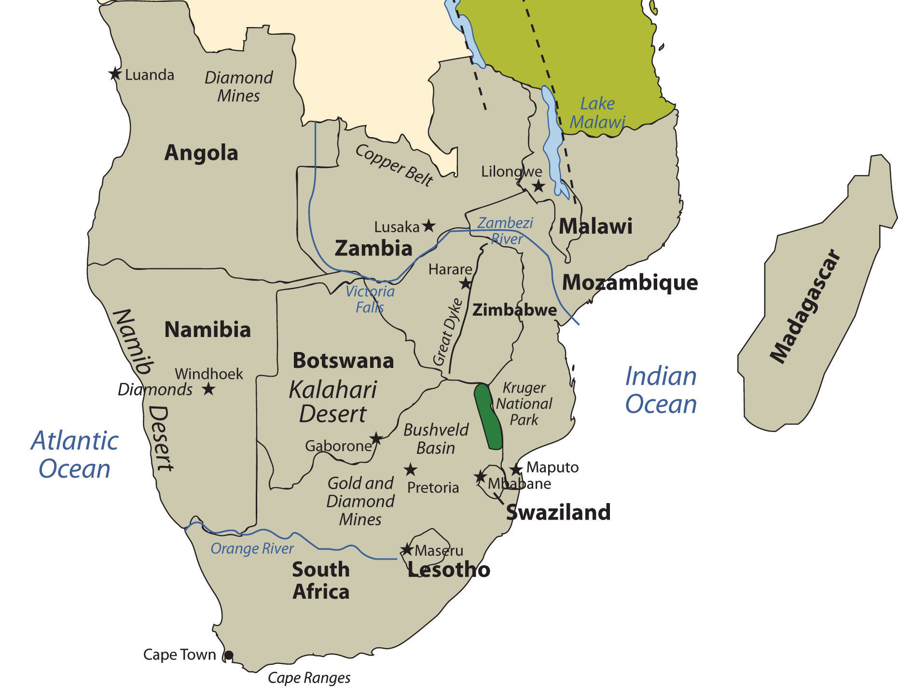Updated from map courtesy of University of Texas Libraries, http://www.lib.utexas.edu/maps/africa/txu-oclc-238859671-africa_pol_2008.jpg.
The region of the African continent south of the Congo and Tanzania is named Southern Africa. The physical location is the large part of Africa to the south of the extensive Congo River basin. Southern Africa is home to a number of river systems; the Zambezi River is the most prominent. The Zambezi flows from the northwest corner of Zambia and western Angola all the way to the Indian Ocean on the coast of Mozambique. Along the way, the Zambezi River flows over the mighty Victoria Falls on the border between Zambia and Zimbabwe. Victoria Falls is the largest waterfall in the world based on selected criteria and is a major tourist attraction for the region.
Southern Africa includes both type B and type C climates. The Tropic of Capricorn runs straight through the middle of the region, indicating that the southern portion is outside the tropics. The Kalahari Desert, which lies mainly in Botswana, is an extensive desert region with an arid mixture of grasslands and sand. When there is adequate rainfall, the grasslands provide excellent grazing for wildlife. Precipitation varies from three to ten inches per year. The Kalahari is home to game reserves and national parks. Large areas of dry salt pans stretch over ancient lake beds. The salt pans fill with water after heavy rainfall but are dry the remainder of the year. The Namib Desert, found along the west coast of Namibia, receives little rainfall. Moderate type C climates are found south of the Kalahari Desert in South Africa, where conditions are suitable for a variety of agricultural activities, including fruit orchards and an expanding wine industry.
Madagascar is located to the east of the continent, in the Indian Ocean. Madagascar is the world’s fourth-largest island and is similar in area to France. Surrounding Madagascar are the independent island states of the Seychelles, Comoros, and Mauritius. Madagascar is included in this lesson on Southern Africa but does not share its cultural geography or biodiversity. Madagascar broke away from the mainland more than 160 million years ago and developed its own environmental conditions and cultural heritage. The early human inhabitants of Madagascar can trace their ancestry to the regions of Malaysia and Indonesia in Southeast Asia. People from the African mainland also joined the population. The whole island later came under the colonial domination of France but won its independence in 1960.
Madagascar’s unique physical environment is home to many plants and animals found nowhere else in the world. At least thirty-three varieties of lemurs and many tropical bird species and other organisms are found only on Madagascar. It is an area of high biodiversity and is home to about 5 percent of all the animals and plants in the world. Tropical rain forests can be found on the eastern edge on the windward side of the island. The western side of the island experiences a rain shadow effect because of the height of the central highlands, which reach as high as 9,435 feet. The western side of the island has a smaller population and receives less precipitation.
Figure 7.50 Black-and-White Ruffed Lemur from Madagascar at the Dudley Zoo in England
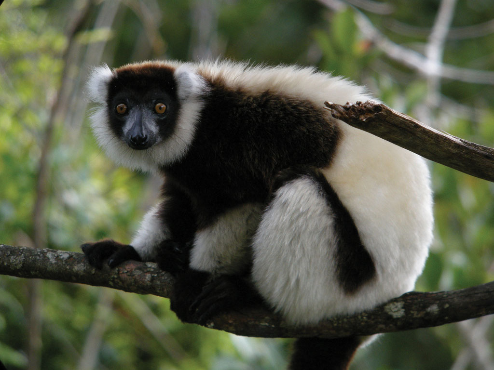Source: Photo courtesy of Frank Vassen, http://www.flickr.com/photos/42244964@N03/4309657930.
Since 1990, the eastern tropical rain forest has experienced a sharp decline because of extensive logging, slash-and-burn agriculture, mining operations, and drought. Population growth has placed a heavier demand on the environment, which in turn puts stress on the habitats of many of the unusual organisms that are unique to the island. Typical of many African nations, agriculture is Madagascar’s main economic activity. About 80 percent of the twenty million people who live on the island earn their living off the land. Deforestation is occurring on all parts of the island and is more severe in areas where human habitation leads to a high demand for firewood used in cooking. In other parts of Africa, important environmental areas have been protected or transformed into national parks and wildlife preserves. Though protected areas do exist on Madagascar, efforts to protect the environment and the wildlife have been hampered by the lack of available funding and the population’s high demand for natural resources.
The countries on the Southern African mainland share many of the demographic qualities of the rest of Africa: large family size, agrarian economies, multiple ethnic groups, rural populations, political instability, and a high rate of rural-to-urban shift. Southern Africa is set apart from other Subsaharan African regions because of its mineral resources, including copper, diamonds, gold, zinc, chromium, platinum, manganese, iron ore, and coal. Countries in Southern Africa are quite large in physical area, except three smaller landlocked states: Lesotho, Swaziland, and Malawi. The larger countries—South Africa, Botswana, Mozambique, Zimbabwe, Zambia, Namibia, and Angola—all have extensive mineral deposits.
The vast mineral resources make this one of the wealthiest regions of Africa with the greatest potential for economic growth. A physical band of mineral resources in Southern Africa stretches from the rich oil fields off the northwest coast of Angola, east through the diamond-mining region, and into the northern Copper Belt of Zambia. A region of rich mineral deposits continues from the unique geological formation called the Great Dyke in central Zimbabwe through the Bushveld basin into South Africa. From here, it extends southwest through the central gold- and diamond-mining regions of South Africa toward the southern coast. Mining activity exists on both sides of the belt of mineral resources. Diamond mining is found in parts of Botswana and along the coast of Namibia. Coal can be found in central Mozambique. The counties that are able to conduct the necessary extractive processes are creating national wealth and increasing the standard of living for their people.
The largest country in Southern Africa is Angola. Located on the west coast of the continent, the country includes the small exclave of Cabinda to the north, which borders the Congo River and is separated from the main body of Angola. Cabinda is a major oil producer and remains a foothold for rebel groups seeking greater control over oil resources. Offshore oil activity has increased in the northern region of Angola and has attracted international oil companies from many countries. In 2007, Angola was the largest oil exporter to China, which has become one of Angola’s largest financial supporters. Oil revenues have helped Angola rebuild after a bitter civil war (1975–2002) devastated the country and its infrastructure. Nevertheless, the country remains one of the world’s poorest; life expectancies were a mere thirty-eight years in 2010. Angola is also burdened with thousands of refugees seeking safety from the civil wars in the Congo.
Angola was a Portuguese colony and fought hard for independence, which it received in 1975. After independence, strong factions clashed to obtain political power. At the same time, the Cold War was at a zenith. The United States and the Soviet Union both used their influence to support political leadership in Angola and other parts of Africa to reflect their respective ideologies. Even Cuba had a large number of military troops in Angola in support of a socialist agenda. As the factions within Angola vied for power, the country was deeply divided. Thus began a twenty-seven-year civil war that finally ended in 2002. The country has been working to recover from this turmoil ever since. Foreign aid and charitable organizations have helped feed the people, and oil revenues are beginning to support recovery. The government of Angola has suffered from serious corruption. Much of the wealth is centralized in the hands of an elite few and does not filter down to the general population.
Natural resources were a major factor in the long, drawn-out civil war. Angola was one of the original countries in which the term blood diamonds was used. Resistant groups would mine the diamonds, sell them on the world market, and use that income to fund their military pursuits. Revenue from the clandestine diamond trade was fueled the death and destruction of the newly independent country. Diamonds are still being mined in Angola and bringing in considerable national income. The industry is not always controlled or managed to lessen the number of diamonds reaching the market from unsubstantiated sources. Natural resources have helped the country look to a future in which a more stable government can work to rebuild the country’s infrastructure and improve the standard of living for its people.
Namibia is a dry, arid land with few people. Its population density of about 6.5 people per square mile in 2009 was the second-lowest in the world after Mongolia. The physical geography of this large country is dominated by arid plateaus and desert regions with changes in elevation between them. The Namib Desert, characterized by enormous sand dunes, runs along the entire west coast. It meets up with the Great Escarpment, which is a sharp rise in elevation of as much as a mile high toward the interior. A central plateau dominates the north-south interior, and the Kalahari Desert is to the east. Natural resources are abundant: uranium and diamonds are the major export products, and lead, zinc, tin, silver, copper, and tungsten are also mined. The coastal waters support a substantial fishing industry. Namibia’s constitution contains language that addresses environmental conservation and the protection of wildlife habitat. The country has created nature conservancies, which have advanced the activities of ecotourism, a source of national wealth promoted by the government.
Figure 7.51 Klein Namutomi Waterhole, Namibia
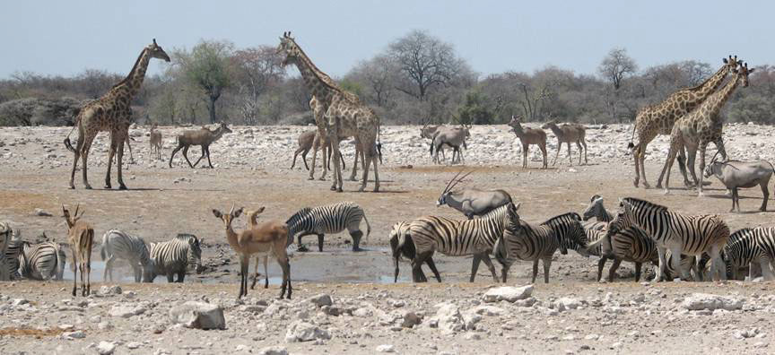Wildlife are becoming an excellent asset for tourism.
Source: Photo courtesy of Scott A. Christy and Heyheyuwb, http://commons.wikimedia.org/wiki/File:Klein_Namutomi_Waterhole,_Namibia.jpg.
The Berlin Conference of 1884, when the colonial European powers met to divide up Africa, resulted in the German colonization of the region of Namibia. The German influence remains evident in the dominant religion: most of the Christians in Namibia, which now make up about 80 percent of the population, are Lutherans.
By 1920, the region known as South West Africa had been transferred to South Africa by the League of Nations. South West Africa had to endure the political policies of apartheid while under the jurisdiction of South Africa. By 1966, local uprisings and a push for sovereignty resulted in a socialist independence movement that created the South West Africa People’s Organization (SWAPO). This organization was entrenched in a guerilla war with South Africa, which led to the return of Namibia to United Nations (UN) supervision. The name Namibia was adopted during this era. Socialist countries such as Cuba provided supported SWAPO’s movement for autonomy.
The 1980s brought about a transition in the governing process in the Namibian War of Independence. In 1985, South Africa installed an interim government in Namibia. A UN peace plan was reached that included Namibia in 1988, and Namibia finally gained its independence in 1990 following South Africa’s withdrawal from Angola in their civil war. SWAPO has become the dominant Namibian political affiliation. As a recently independent country, Namibia has had to work through a natural transition process to create a stable government to sustain itself as an independent country.
The landlocked country of Zambia was known as Northern Rhodesia during colonial times. From 1891 to 1923, it was administered by Britain’s South Africa Company. Then it became a colony of Great Britain. The name was changed to Zambia when the country was granted independence in 1964. Lusaka is its primate city and capital.
Mining in the Copper Belt to the north provides both economic activity and employment opportunities for the people, but long distances from major seaports and the fluctuation in world commodity prices do not provide a stable economic situation for the mining industry. Though most of the population makes their living by subsistence agriculture, the country has a large urbanized population that heavily depends on the mining industry for employment and economic support.
The country is expected to double in population in about thirty-five years if current rates continue. The average family size is more than five members. The larger towns and cities along the major transportation routes are the main population centers. Unemployment remains high in these urban areas; there are few opportunities for economic development. More than seventy ethnic groups can be found in Zambia, including a small but growing Chinese population. English is the official language, but many other languages are spoken. Most of the people are Christians with a wide variety of denominations. Animist and traditional beliefs are also common.
Malawi is a landlocked nation that became independent in 1964. The British controlled the region in 1891 and named their colony Nyasaland after Lake Nyasa, a large lake in Malawi; the lake is also called Lake Malawi. The lake serves as the eastern border of the country. Another name for Lake Malawi is Calendar LakeA name applied to Lake Malawi because it is 365 miles long and 52 miles wide., named so because of its physical dimensions, which are 52 miles wide and 365 miles long. Lake Malawi is a deepwater lake with depths reaching 2,300 feet. The great depths of the lake are caused by the Great Rift Valley, which created the depression the lake rests in. The lake provides for the livelihoods for millions of people who live along its shores and depend on it resources of fish and fresh water.
Figure 7.52 Tea Plantation in Malawi
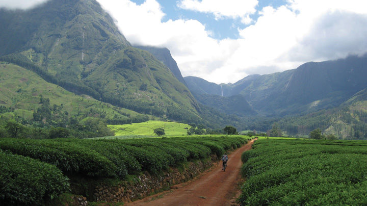Source: Photo courtesy of Bryce Sitter.
Malawi is not a technologically developed country. Only about 15 percent of the population lives in urban areas. About 90 percent of the country’s exports are agricultural products of tea, sugar, coffee, and tobacco. Malawi’s government requires substantial assistance from the international community, such as the World Bank and the International Monetary Fund (IMF). Complicating the situation are instances of government corruption that have led to the withholding of international aid. Another major problem for Malawi is the significant number of HIV-infected people. Also, family size is commonly large, and rapid population growth places an ever-increasing demand on natural resources.
Before colonial Europeans arrived in the region of Mozambique along Africa’s east coast, the Bantu people of a number of ethnic subgroups were the dominant people, and they still make up more than 99 percent of the population. Portugal had claimed the region as a colony as early as the sixteenth century. Portugal strongly resisted releasing its claims to Mozambique but did so after much opposition; the country became independent in 1975. The transition from colony to independent nation was a struggle for Mozambique. The rebel groups that had been instrumental in fighting a guerilla war for independence against Portugal remained active after 1975 and fighting continued after independence. The country fell into a violent civil war from 1977 to 1992. Central elements in this war were involvement or influence by Zimbabwe and South Africa on one side and Marxist support from the Soviet Union on the other. More than a million people died in this brutal war, which also devastated the country, destroyed valuable infrastructure, and created more than a million refugees who sought sanctuary in neighboring countries. At the same time, most people of Portuguese descent left because of safety concerns. A peace agreement was finally reached in 1992. Since then, the country has had to struggle to create a stable government and provide a safe environment for its people.
Foreign aid has remained a necessity to provide economic stability for Mozambique. The agrarian society includes a high percentage of the population that lives below the poverty line. Selective mining operations and the introduction of garment manufacturing augments the main agricultural activities. Since 2000, the government has worked to implement economic reforms and to curb excess spending. Both have had a positive effect on economic growth. It is not unusual for foreign debt to plague developing countries, and Mozambique has suffered from a high level of national debt that has threatened to bankrupt the country. Debt relief for Mozambique came through the IMF’s debt forgiveness program; both debt forgiveness and loan rescheduling agreements were implemented. The positive growth pattern indicates that even desperately poor countries can work to improve the standard of living for their people if there are adequate resources and opportunities for employment. Still, rapid population growth potentially cancels out economic gains and threatens to deplete valuable resources, thereby creating an even more difficult path for future stability.
There is no better way to understand Zimbabwe than to become familiar with the history and heritage of the people who live there. The Great Zimbabwe Kingdom flourished from about 1250 to 1450, when it was eclipsed by succeeding kingdoms. Ruins from the extensive stone architecture of that era remain and are a major tourist attraction. These kingdoms were major trading centers for the region but later clashed with the colonial powers that desired to dominate regional trade for themselves. The Bantu civilization of Southern Africa established a number of kingdoms that existed in Zimbabwe up to the colonial era.
Zimbabwe experienced similar colonial activity to that which befell Zambia, its neighbor to the north. Britain arrived in the late 1800s, and by 1923 they called their newly controlled colony Southern Rhodesia, after Cecil Rhodes, who headed the British South Africa Company, a mercantile company that broke new ground in the region. The British were able to quell any resistance to their activity and consolidated their holdings. After Zambia become independent, Southern Rhodesia was renamed Rhodesia. In 1965, the white-dominated leadership of the Rhodesian government unilaterally declared its independence, but Britain did not recognize this action. The UN issued sanctions against the white leadership; the response was an internal guerilla uprising to fight for free elections that would include black Africans. Independence was finally granted in 1980, and the country’s name was officially changed from Rhodesia to Zimbabwe.
In 1980, Robert Mugabe came to power as the first president and extended his authoritarian rule over the next three decades. During this time, the country experienced more than its fair share of civil unrest and political turmoil. Mugabe has been accused of corruption, election rigging, and pillaging of public funds for personal gain. Under his leadership, there have been accusations of government mismanagement, human rights abuses, and hyperinflation of the country’s currency. In 2008, inflation led to serious devaluation of the currency. The Reserve Bank of Zimbabwe printed banknotes in the denomination of one hundred trillion dollars that were only worth a few US dollars in the international exchange. The people continue to work through these difficult economic conditions.
Mugabe initiated a land reform policy that would take land owned by people of white European ancestry and redistribute it to people of black African ancestry. During the colonial era, white Europeans, who only made up a small percentage of the population, moved in and took control of most of the agricultural lands. Land reform was a progressive policy and was meant to provide a greater level of equality within the country. However, the disorganized methods used to carry out the plan resulted in violence and the confiscation of farmland with little regard for the rule of law.
Figure 7.53 Towers of the Great Zimbabwe Kingdom
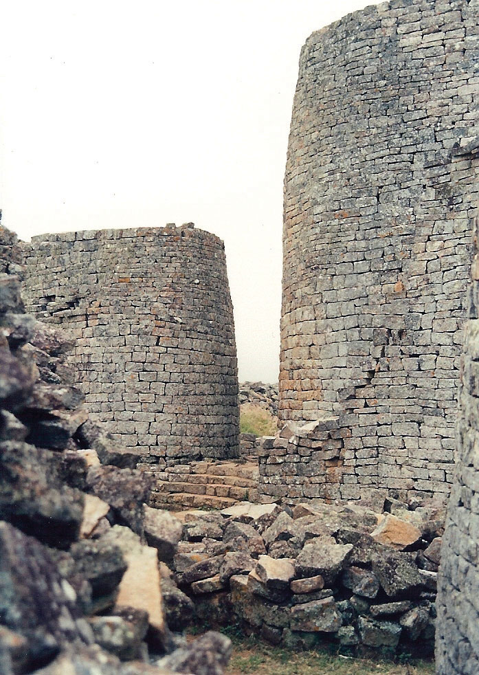This photo shows the ruins the Great Zimbabwe Kingdom, an ancient empire that gave Zimbabwe its name after the colonial era, during which it was called Rhodesia.
Source: Photo courtesy of Kevin Walsh, http://www.flickr.com/photos/86624586@N00/23020149/.
Thousands of white farmers and their families left the country. Some were killed when their farms were taken over by force. Mugabe was accused of corruption in making sure his cronies benefited from the land reform without being concerned about the general population. The disruption in the agricultural sector resulted in a drastic reduction in agricultural output. The country shifted from a once sustainable, prosperous agricultural sector with extensive exports to an agricultural system that was in disarray. The result was food shortages and the loss of enormous agricultural export profits.
Shaping a stable post-Mugabe government will be a challenge for Zimbabwe. Solving the problems resulting from the transition from exploitive colonial rule to personal authoritarian rule will be an arduous undertaking. The country has serious economic problems that have lowered the amount of opportunities and advantages for its people. Life expectancies have dropped from about sixty years in 1990 to fewer than forty years two decades later. Health care, education, and social services have not reached the level needed to sustain a healthy society by world standards. The HIV/AIDS epidemic has hit Zimbabwe hard, affecting a higher percentage of its population than most of the other African countries. Political turmoil, civil unrest, and violence have reduced the level of law and order within the country. These issues are indicators that within the globalization process, countries such as Zimbabwe will be losing out on the opportunity to attract foreign investments, manufacturing expansions, or employment opportunities being developed elsewhere to meet the demands of the marketplace.
The country of Botswana is relatively flat, and the Kalahari Desert covers as much as 70 percent of its land area. By the time it established independence from Britain in 1966, the lack of agricultural lands had reduced the country’s economic level to the lowest in the world. At that time, the country was called Bechuanaland.
Botswana has transitioned more smoothly than other African countries into a stable political system with a fast-growing economy. It has an emerging service sector, extensive diamond mining, and expanding industrial ambitions. Personal incomes are rising, and the standard of living is reaching upward to the second highest in the region after South Africa.
Botswana is fortunate to have had uninterrupted civilian political leadership for the decades following independence. This stable government has implemented progressive social policies and attracted significant capital investments to create one of the most dynamic economies in Africa. Diamond mining has been the principle extraction activity dominating the country’s export income. The stability of the country has enhanced the tourism market and created a growing ecotourism industry. The vast Kalahari Desert and the well-protected game reserves provide attractive tourist destinations.
Figure 7.54 San Bushmen in Deception Valley, Botswana
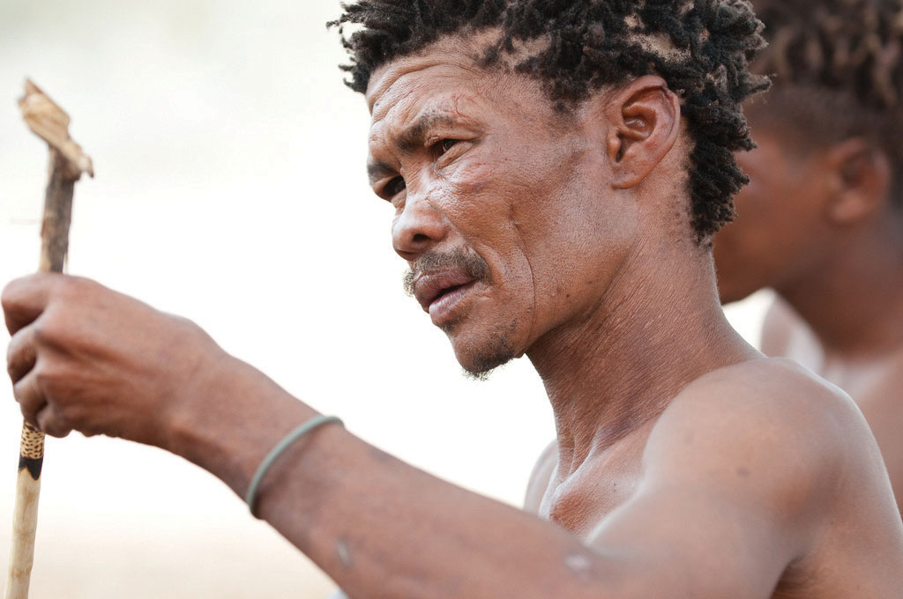Source: Photo courtesy of Karen Corby, http://www.flickr.com/photos/scorbs/4284216666/.
Far from the fast-growing urban development of the big cities in Botswana, there exists a dispute between the government of Botswana and the indigenous San people who live in the middle of the Central Kalahari Game Reserve. The government has established programs to move the San from the reserve to other locations where they would become less nomadic and settle into a more agrarian lifestyle. According to the government position, this is to keep the natural habitat and wildlife from being affected by human activity, thereby promoting tourism. The courts, however, ruled against the forced move of the San out of the Central Kalahari Game Reserve. Critics of the government program claim the real reason for the move is to clear the land of human habitation so the area can be developed for mining purposes. Estimates indicate that fewer than one hundred thousand San presently live in Southern Africa; about fifty-five thousand San live in Botswana.
Botswana’s government has advanced one of Africa’s most progressive and comprehensive programs for dealing with HIV/AIDS. Medical care, education, and social services are being strengthened. Botswana ranks at the top end in terms of the percentage of people who are infected with HIV/AIDS. This epidemic cuts across all levels of society and culture. The social stigma attached to being infected with HIV discourages individuals from being tested for the disease or seeking medical care. Addressing this epidemic is a challenge throughout Southern Africa.
Figure 7.55 Baobab Tree in Southern Africa
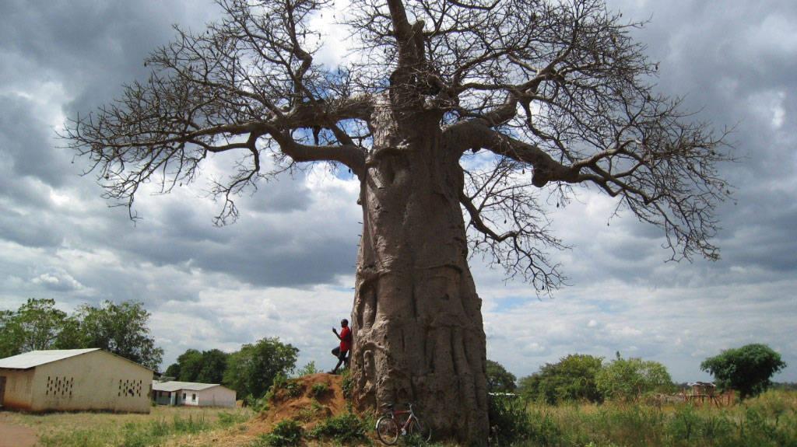These trees are so large that people have actually lived inside them.
Source: Photo courtesy of Bryce Sitter.
Anchoring Subsaharan Africa to the south is the dominant country of South Africa. Its large land area and vast mineral resources support a population of about fifty million people. The Cape of Good Hope on the southern tip of the continent is a transition point from the Atlantic Ocean to the Indian Ocean. Its strategic location was important for the control of shipping during the early colonial era before the Suez Canal provided a shortcut between Europe and Asia, bypassing most of Africa. The European colonial era first brought Dutch explorers to the Cape of Good Hope, where they established the city of Cape Town as a stopover and resupply outpost on their way to rest of Asia.
South Africa is home to many indigenous ethnic groups and is demonstrative of the diverse pattern of human geography. The country has a history of both ethnic diversity and ethnic division. Two of the largest African groups are the Xhosa and the Zulu. The European component of the ethnic mosaic was enhanced by colonial and neocolonial activities. After the arrival of the first Dutch ships, other Europeans followed and competed with the African groups for land and control. The discovery of first diamonds and then gold prompted Britain’s involvement in South Africa. The Boer Wars (1880–81 and 1899–1902) were fought between the Dutch-based BoersThe Dutch-based settlers in Southern Africa during the colonial era who became known as Afrikaners. and Britain for control of South Africa’s mineral resources. South Africa became a British colony dominated by a white power structure. The Boers (later known as AfrikanersThe Dutch-based settlers of Southern Africa during the colonial era who were originally known as the Boers.) spoke Afrikaans and were prominent in the South African political system.
Figure 7.56 “Petty Apartheid” Beach Sign Written in Afrikaans and English
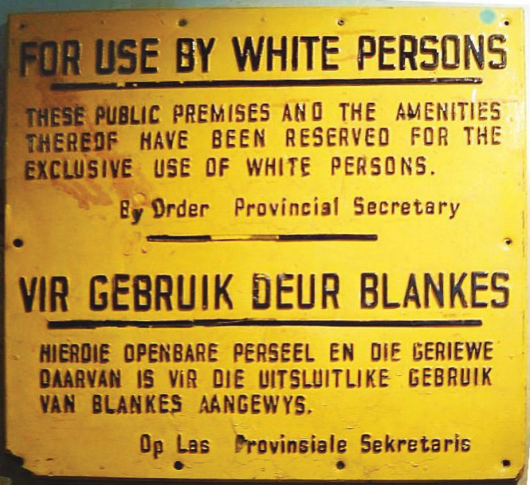Source: Photo courtesy of El C, http://commons.wikimedia.org/wiki/File:ApartheidSignEnglishAfrikaans.jpg.
Segregation first developed as an informal separation of the racial groups but evolved into the legally institutionalized policy of apartheidA legally institutionalized policy of segregation (in South Africa) based on ethnic background or skin color., which separated people into black, white, and coloured (mixed race) racial categories. A fourth category was developed for people from Indian or Asian backgrounds. Apartheid eventually found its way into every aspect of South African culture. In the larger scale of society, access and separation was based on race. Each racial group had its own beaches, buses, hospitals, schools, universities, and so on. The legal system divided the population according to race, with the white minority receiving every advantage. There were extensive and detailed rules for every aspect of daily activity, including which public restroom or drinking fountain could be used, which color an individual’s telephone could be, and which park bench a person could sit on. The government also sanctioned separate homelands for people from different ethnic groups. People were physically removed from their homes and transported to their respective new homelands based on their racial or ethnic background. The policy of apartheid not only divided the country at that time but set up racial barriers that will take generations to overcome.
The controversial policy of apartheid in South Africa achieved international attention. Many countries condemned it and implemented economic sanctions and trade restrictions against South Africa. Opposition grew within the country and erupted into violence and social unrest. As a result, the white-dominated government of South Africa began to dismantle the apartheid system in the 1990s. The ban on political opposition parties, such as the African National Congress, was lifted, and after twenty-seven years in prison, Nelson Mandela was released from prison, where he had held for his resistance activities. The apartheid legislation was repealed, and a new era began. Mandela was the first African to be elected president of South Africa in the new multiracial elections of 1994. His presidency, which ended in 1999, set the stage for a multiracial society. The country is still working through the ramifications of all those years of racial separation. As can be expected, the transition has not been without difficulty.
South Africa has large, modern cities such as Cape Town, Johannesburg, and Durban, each about the size of the US city of Chicago or larger. The cities of Pretoria, East Rand, and Port Elizabeth are also major metropolitan areas and have more than one million people each. These urban centers all contribute to and support the extensive mining and agricultural activities that provide national wealth. As the country that exports more diamonds than any other in the world, South Africa has gained much national income from the extraction of mineral resources, which are being tapped by some of the largest mining operations on Earth.
Large parts of South Africa have a moderate climate and good soils, which combine to produce enormous quantities of agricultural products, both for domestic consumption and for export profits. Mining and agriculture have provided extensive opportunities for employment—opportunities that draw in migrants from neighboring countries that have experienced either political unrest or poor economic conditions. These immigrants add to the cultural dynamics of an already ethnically diverse country.
South Africa’s manufacturing sector is not well developed. The country depends on Europe, East Asia, and the United States, the three main core economic areas of the world, to provide postindustrial goods. There are few well-paying manufacturing jobs to provide for a growing or stable South African middle class.
The structure and dynamics of the current economic activities have brought about a two-tiered socioeconomic system. Most of the population may work in the mines, in agricultural activities, or in the service sector, but they are not directly benefiting from the profits of their labor, other than earning a wage. These people find themselves in the poorer working-class majority of the population. The landowners, mining corporation executives, and social elite that control the service sector or are employed in activities such as banking or the commodity markets are receiving higher incomes and have created a wealthier upper class. Apartheid supported this class division. The current free and open legal system has yet to bring about a change in the socioeconomic structure of the population. Millions of poor ethnic minorities find themselves in living conditions similar to their economically depressed neighbors in other parts of Africa, while the wealthier upper class has established a good standard of living similar to that of the core economic areas of the world.
Figure 7.57 Provinces of South Africa after Reorganization in 1994

South Africa redesigned its internal provincial boundaries in 1994. The two large former provinces of Cape in the south and Transvaal in the north were divided up into seven smaller units. The province of Orange Free State was changed to Free State and the province of Natal was changed to Kwazulu-Natal; both kept their main boundaries intact.
South Africa redrew its internal provincial boundaries in 1994. The large former Cape Province in the south, which had been a former British center of power, was divided into three smaller provinces. The large Transvaal Province in the north, which had been a center for Afrikaners, was divided into four smaller provinces. Orange Free State changed its name to Free State and Natal Province changed its name to Kwazulu-Natal. The changes were made based on the size and political management of the country that had come with the transfer of power when Mandela became president. The European colonial pattern of settlement was adjusted to represent a more South African pattern of political administration.
In 2010, South Africa surpassed Morocco and Egypt in the political arena and were chosen to host the World Cup soccer games. The African teams in included Algeria, Cameroon, Ivory Coast, Ghana, Nigeria, and South Africa. The World Cup is held once every four years. The cost to host the games was enormous and also a testimony to the people and government of South Africa. The country had to build five new stadiums and upgrade five existing stadiums for the games; the largest stadium was Soccer City in Johannesburg, with a capacity of about 84,490. Overall construction costs were estimated to be more than one billion dollars. Transportation infrastructure and road networks were also improved.
The preparations and costs that South Africa undertook to hold the games were not without controversy. Sections of shack dwellers in Durban and in other places were relocated to be out of the sight of international visitors attending the games. This move was made to improve the country’s image for tourism. There were also reports of strikes by the construction workers building the stadiums, many of them temporary workers making about three hundred dollars per month, who argued that their wages were too low. South Africa’s unemployment rate at the time was about 25 percent, and the country continues to struggle with unemployment. The hope was that the infrastructure improvements would benefit the country for the long term and that tourism would increase if the individuals who came for the games encouraged others to visit. South Africa was banking on this event to boost its economic conditions and strengthen its standing in the global marketplace.
The impact of sports on a society—both positive and negative—can be enormous. Hosting the World Cup necessitated the strengthening of South Africa’s security operations to meet FIFA (Fédération Internationale de Football Association) standards to handle the high influx of participants and visitors. It has been estimated that South Africa invested about $4.3 billion to host the games. These are billions that are not going toward providing water, medical clinics, and educational support to the poorest neighborhoods and communities. The financial investments indicate the power and attraction that the World Cup holds on a global basis. No African team was in the final match (Spain defeated the Netherlands), but soccer is a widely supported sport throughout Africa. The 2014 World Cup will be hosted by Brazil.
Figure 7.58 Cape Town Stadium, Taken from Signal Hill, South Africa; Seating Capacity of 64,100
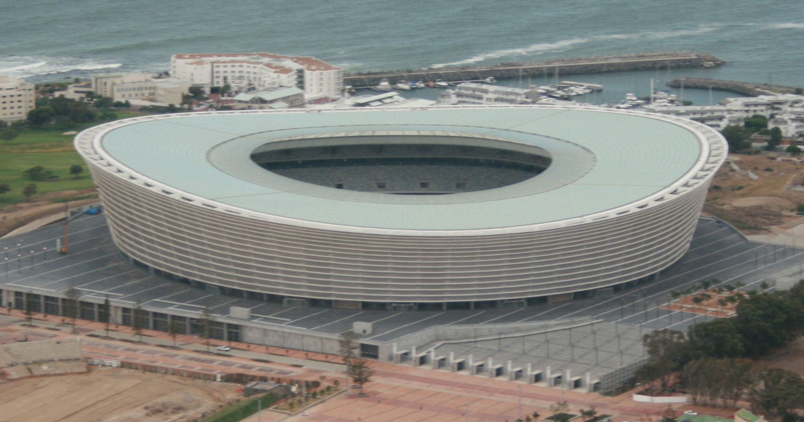Source: Photo courtesy of RossW, http://commons.wikimedia.org/wiki/File:CTSRW01.JPG.
The two small landlocked enclaves of Lesotho and Swaziland are independent countries surrounded by South Africa. Mozambique borders Swaziland to the north. Under British occupation, the area of Lesotho was called Basutoland. Upon achieving independence in 1966, the area was renamed the Kingdom of Lesotho. The country is rather mountainous, and most of the land area is more than a mile in elevation. The Sotho people have a Bantu background and speak a Bantu language. More than 80 percent are Christian. Lesotho is the size of the US state of Maryland and has a population of more than two million people. The main economic activity has been based on agriculture, but a large percentage of income comes from remittances from Lesotho citizens who work in South Africa. Light manufacturing is beginning to emerge to enhance the economy. Diamonds and other minerals have been found here.
Lesotho is a constitutional monarchy: the government is led by a prime minister, but the king retains his ceremonial position. Reforming the country from a kingdom to a democratic-style government has not been without obstacles. The country has been subjected to political unrest, resulting in many years of military rule and violent internal conflicts. Lesotho is trying to stabilize its political situation and economy.
The Swazi Kingdom functioned under relative autonomy during colonial times, and Britain granted independence to Swaziland in 1968. The Swazi are a Bantu people who migrated into Southern Africa centuries ago with the Xhosas and Zulus. Swaziland has low mountains to the north with the grasslands and scrub forests of the savannas in the east and rain forests in the west. It is ruled by an absolute monarch, one of the last in the world. Political unrest has led to challenges to his rule. Reformers are pushing for modification of the government and for some element of democratic reform, but reforms are slow in materializing. The small country of Swaziland is about the size of the US state of New Jersey. There are more than one million people, and one-third of the population is infected with HIV/AIDS.
Identify the following key places on a map: